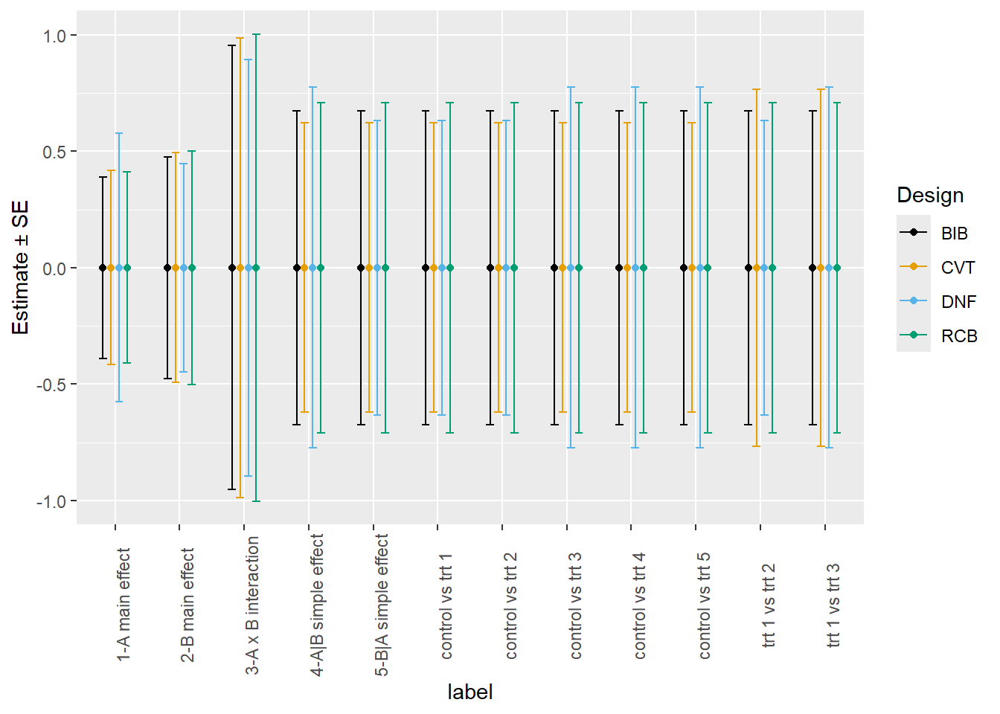
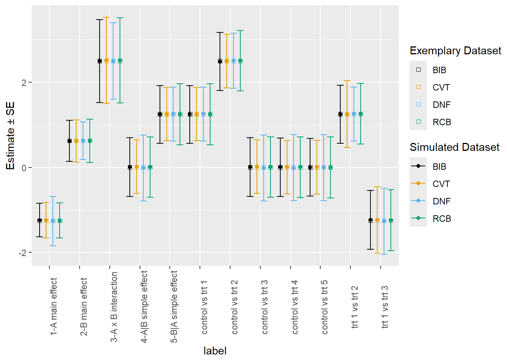
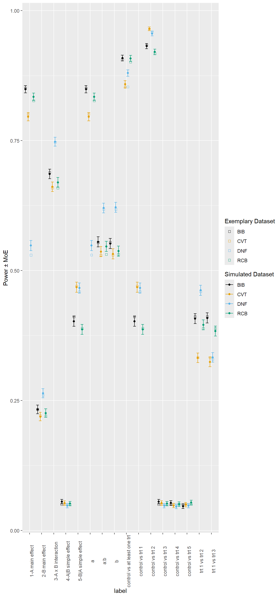

| B1 | B2 | B3 | |
|---|---|---|---|
| A1 | 0 | 1 | 2 |
| A2 | 3 | 4 | 5 |
Examples 10 and 11: Mixed Models-Based Precision and Power Analyses for Design Comparisons Using PROC GLIMMIX and glmmTMB + emmeans
Joint Effort by the NCCC170: “Research Advances in Agricultural Statistics”: Informing Best Practices for GLMM Implementation
Contributors: Daniel G. Palmer, Nora M. Bello, Josefina Lacasa, Réka Howard, Walter W. Stroup
Caution
This resource was created by a joint effort of NCCC170 members and is provided free of charge with absolutely no warranty. Please use and redistribute this resource with no restrictions.
NoteGLMM Challenge
Precision and power analysis are crucial aspects to consider when planning agricultural studies. Precision analysis is useful when the researcher wants to determine the amount of variability around an effect of interest. Power analysis is useful when the researcher wants to determine what sample size is needed to achieve confidence in the supposed effect of interest being a true effect. In addition, the determination of statistical power is essential for ensuring that the design is appropriately designed to detect statistical significance and minimizing the likelihood of Type II errors.
The choice of experimental design for a study is critical and can be costly if done without the appropriate planning. Many researchers use balanced incomplete block and (forced) randomized complete block designs (RCBD). Others use control versus experimental and disconnected/nested factorial (split-plot) designs. RCBD have block sizes that are dictated by the researcher where each block contains all assigned treatments. Sometimes, the block size arises naturally. An example of this is that plots have a natural block size within a particular field (incomplete block design or generalized RCBD). In many cases, respecting the block size is paramount.
Another factor to consider is that canned power calculators usually cannot appropriately account for the complexity of the experimental design under consideration. Often, statisticians commonly implement special simulation models (Monte Carlo or other) to compute precision and power for research studies (stroup2018?). This is usually sufficient, but simulation does not offer a closed-form solution unlike many standard power calculators which limits its flexibility for case-specific simulations.
The authors share approaches yielding identical results in SAS® (sas?) and R (base?; brooks2017?; mcgillycuddy2025?; emmeans?) for precision and power analysis with linear mixed models. In both platforms, the algorithm is flexible so any design involving fixed and random effects with normally-distributed responses can be considered.
The full document needs to be compiled by someone that has access to desktop SAS. I no longer have access. Just remove *| eval: false; from code chunks. -Daniel
Let us assume that there is a situation where the following resources are available: 10 blocks with natural block size of 3 units with six treatment combinations in a 2x3 AxB factorial arrangement.
Table 1 shows the six AxB treatment combinations.
Candidate Designs
The objective of this particular example is to select the experimental design that yields the lowest standard errors from the mixed models and proceed with the power analysis for that design. There are a set number of resources for the candidate designs.
All datasets come from the book Generalized Linear Mixed Models Concepts, Methods, and Applications, 1st Edition (stroup2016?) and 2nd Edition Chapter 21, Section 21.2 (stroup2024a?; stroup2024b?).
Balanced Incomplete Block Design
The balanced incomplete block (BIB) design has a natural block size of three for 10 blocks. This design has each ordered pair of treatments appear in exactly two of the 10 blocks. For example, the first block (\(\{0, 1, 2\}\)) can have three ordered pairs in the set \(\{(0, 1), (0, 2), (1, 2)\}\). The ordered pair \((0, 1)\) would appear in exactly one other block.Control vs Experimental Treatments Design
The control vs experimental (CVT) design also has a natural block size of three for 10 blocks. The control group is assigned to each of the 10 blocks.Disconnected/Nested Factorial Design
The disconnected/nested factorial (DNF) design also has a natural block size of three for 10 blocks. If the ordered pairs of the block levels in the set are defined as \(\{(1, 2), (3, 4), (5, 6), (7, 8), (9, 10)\}\), then the first factor level of a factor \(A\) \((A1)\) would map to the first element in each ordered pair and the second factor level \((A2)\) would map to the second element in each ordered pair. Within each factor level of \(A\), there is a sub-plot that has the natural block size of three. We assign the three levels of a factor \(B\) \((B1, B2, B3)\) to the three treatments in each block corresponding to the factor levels of \(A\). This design is commonly called a split-plot design.“Forced” Randomized Complete Block Design
The forced randomized complete block (RCB) design is a natural extension of the disconnected/nested factorial design that has a forced block size of 6 for 5 blocks. Each treatment appears in each forced block (rep).
Table 2 describes the layout of the candidate designs (BIB, CVT, DNF, and RCB), and the treatment assignments within the blocks.
Balanced Incomplete Block (BIB)
|
Control vs Experimental (CVT)
|
Nested Factorial (DNF)
|
Randomized Complete Block (RCB)
|
||||||||||||
|---|---|---|---|---|---|---|---|---|---|---|---|---|---|---|---|
| Block | Block | Block | Rep | ||||||||||||
| 1 | 0 | 1 | 2 | 1 | 0 | 1 | 2 | 1 | 0 | 1 | 2 | 1 | 0 | 1 | 2 |
| 2 | 0 | 1 | 3 | 2 | 0 | 1 | 3 | 2 | 3 | 4 | 5 | 3 | 4 | 5 | |
| 3 | 0 | 2 | 4 | 3 | 0 | 1 | 4 | 3 | 0 | 1 | 2 | 2 | 0 | 1 | 2 |
| 4 | 0 | 3 | 5 | 4 | 0 | 1 | 5 | 4 | 3 | 4 | 5 | 3 | 4 | 5 | |
| 5 | 0 | 4 | 5 | 5 | 0 | 2 | 3 | 5 | 0 | 1 | 2 | 3 | 0 | 1 | 2 |
| 6 | 1 | 2 | 5 | 6 | 0 | 2 | 4 | 6 | 3 | 4 | 5 | 3 | 4 | 5 | |
| 7 | 1 | 3 | 4 | 7 | 0 | 2 | 5 | 7 | 0 | 1 | 2 | 4 | 0 | 1 | 2 |
| 8 | 1 | 4 | 5 | 8 | 0 | 3 | 4 | 8 | 3 | 4 | 5 | 3 | 4 | 5 | |
| 9 | 2 | 3 | 4 | 9 | 0 | 3 | 5 | 9 | 0 | 1 | 2 | 5 | 0 | 1 | 2 |
| 10 | 2 | 3 | 5 | 10 | 0 | 4 | 5 | 10 | 3 | 4 | 5 | 3 | 4 | 5 | |
Data Generation Process and Model Specification
Following (stroup2016?) and Stroup et al. (stroup2024a?; stroup2024b?), the ANOVA shells for each design are implemented. Each ANOVA shell has four parts described below:
Design Structure
The design structure is the same for the BIB, CVT, and DNF designs since the number of blocks and block sizes are the same for the three designs. The RCB is using the forced complete blocks, so the degrees of freedom are partitioned differently.
Treatment Structure
The treatment structure is the same for all candidate designs since the number of factor levels for the treatments are the same.
Combined Structure
The combined structure is the same for the BIB and CVT designs due to the “true” factorial structure of these designs. Since the DNF is disconnected, the \(Block\) factor is nested within factor \(A\). So, we lose a degree of freedom there that goes to the error. The RCB is also a “true” factorial, but differs due to the forced blocks.
Model Effect and Distribution
For all designs, \(Block\) (and \(Rep\)) is a random effect and all other are fixed effects. Due to the disconnected nature of the DNF design, \(Block\) cannot be treated as fixed.
The ANOVA shells including the design structure, treatment structure, combined structure, and the model effect and distributional assumptions are displayed in Table 3 for the BIB design and CVT design, in Table 4 for the DNF, and in Table 5 for the RCB.
BIB and CVT
Design structure
|
Trt structure
|
Combined
|
Model effect + distribution
|
|||
|---|---|---|---|---|---|---|
| Source | df | Source | df | Source | df | |
| Block | \(r-1\) | Block | \(r-1\) | \(r_k{~}iid{~}N(0, \sigma_r^2)\) | ||
| Factor A | \(a-1\) | Factor A | \(a-1\) | \(\alpha_i\) | ||
| Factor B | \(b-1\) | Factor B | \(b-1\) | \(\beta_j\) | ||
| A*B | \((a-1)(b-1)\) | A*B | \((a-1)(b-1)\) | \((\alpha\beta)_{ij}\) | ||
| Obs(Block) | \((n_r-1)r\) | Block*A*B | \((n_r-1)r-ab+1\) | \(e_{ijk}{~}iid{~}N(0, \sigma_e^2)\) | ||
| Total | \(N-1=n_rr-1\) | \(N-1=n_rr-1\) | ||||
- \(r =\) number of blocks, \(n_r =\) natural block size, \(a =\) number of levels for factor A, \(b =\) number of levels for factor B, \(N =\) total number of observations
DNF
Design structure
|
Trt structure
|
Combined
|
Model effect + distribution
|
|||
|---|---|---|---|---|---|---|
| Source | df | Source | df | Source | df | |
| Factor A | \(a-1\) | Factor A | \(a-1\) | \(\alpha_i\) | ||
| Block | \(r-1\) | Block(A) | \(r-a\) | \(r_{k(i)}{~}iid{~}N(0, \sigma_r^2)\) | ||
| Factor B | \(b-1\) | Factor B | \(b-1\) | \(\beta_j\) | ||
| A*B | \((a-1)(b-1)\) | A*B | \((a-1)(b-1)\) | \((\alpha\beta)_{ij}\) | ||
| Obs(Block) | \((n_r-1)r\) | Block(A)*B | \((n_r-1)r+a-ab\) | \(e_{ijk}{~}iid{~}N(0, \sigma_e^2)\) | ||
| Total | \(N-1=n_rr-1\) | \(N-1=n_rr-1\) | ||||
- \(r =\) number of blocks, \(n_r =\) natural block size, \(a =\) number of levels for factor A, \(b =\) number of levels for factor B, \(N =\) total number of observations
“Forced” RCB
Design structure
|
Trt structure
|
Combined
|
Model effect + distribution
|
|||
|---|---|---|---|---|---|---|
| Source | df | Source | df | Source | df | |
| Forced Block | \(\left\lceil\frac{r}{2}\right\rceil-1\) | Forced Block | \(\left\lceil\frac{r}{2}\right\rceil-1\) | \(f_{k}{~}iid{~}N(0, \sigma_f^2)\) | ||
| Factor A | \(a-1\) | Factor A | \(a-1\) | \(\alpha_i\) | ||
| Factor B | \(b-1\) | Factor B | \(b-1\) | \(\beta_j\) | ||
| A*B | \((a-1)(b-1)\) | A*B | \((a-1)(b-1)\) | \((\alpha\beta)_{ij}\) | ||
| Obs(Forced Block) | \((2n_r-1)\left\lceil\frac{r}{2}\right\rceil\) | Block(A)*B | \((2n_r-1)\left\lceil\frac{r}{2}\right\rceil-ab+1\) | \(e_{ijk}{~}iid{~}N(0, \sigma_e^2)\) | ||
| Total | \(N-1=n_rr-1\) | \(N-1=n_rr-1\) | ||||
- \(r =\) number of blocks, \(n_r =\) natural block size, \(a =\) number of levels for factor A, \(b =\) number of levels for factor B, \(N =\) total number of observations
Four-Step Process for Precision Analysis and Power Analysis
In this section, a four-step approach is presented for precision analysis (Example 10) and power analysis (Example 11). If a statistician is only interested in performing the precision analysis, the first three steps may be followed in order. The conclusion of this process helps decide which design to proceed with that will yield the lowest standard errors for the contrasts of interest. However, if a statistician is interested in performing the power analysis, the four-step approach need not be followed in order. Some possible scenarios are:
Steps 1-4 may be followed in order from start to finish. The precision analysis may be used to select the design with the lowest standard errors for the effect(s) of interest, and this design alone would be used when computing the power. The sample size would be adjusted for the selected design in step 4 until some threshold of 80% or 90% power is met (assuming resources aren’t limited).
Steps 1-2 would be followed in order, but the precision analysis in step 3 would be skipped entirely. The power analysis would be performed in step 4 and the design of choice would be selected after adjusting the sample size until some threshold of 80% or 90% power is met (assuming resources aren’t limited).
For this hypothetical example, we will follow the first approach listed. Here is a breakdown of the four steps:
Step 1 - First, create an exemplary dataset with the structure of the design being evaluated.
Depending on the design, the exemplary dataset contains the expected values for treatment groups at each time. One can include a case in the dataset for each individual replicate or a frequency variable to represent the multiple replicates.
For precision analysis, expected values can be set to any value since we are not interested in the point estimates. For example, \(\mu_i=42\) for \(i = 0, 1, 2, \dots, 5\).
For power analysis, the expected values need to be specified according to the details of the experiment. In our example, we have \(\mu_0=\mu_3=\mu_4=\mu_5=20\), \(\mu_1=18.75\), and \(\mu_2=17.5\).
Notice there is no variability introduced in the expected values.
Factor \(A\) is defined as \[\begin{equation} A = \begin{cases} 1 & \text{if } Trt \in \{1,2\} \\ 2 & \text{if } Trt \in \{3,4,5\} \end{cases} \end{equation}\]
Factor \(B\) is defined as \[\begin{equation} B = \begin{cases} 1 & \text{if } Trt = 3 \\ 2 & \text{if } Trt \in \{1,4\} \\ 3 & \text{if } Trt \in \{2,5\} \end{cases} \end{equation}\]
(littell80?) and (lohr84?) introduced the exemplary dataset approach for linear models in
PROC GLM. (stroup1999?) introduced the exemplary dataset approach for linear mixed models inPROC MIXED. (stroup2016?) and Stroup et al. (stroup2024a?; stroup2024b?) introduced the exemplary dataset approach for generalized linear mixed models inPROC GLIMMIX.Step 2 -
PROC GLIMMIX(sas?) inSAS®orglmmTMB(brooks2017?; mcgillycuddy2025?) inRstep to “fit” model with fixed (co)variance componentsIn
SAS®, use thePARMSstatement with theHOLDandNOPROFILEoptions. The parameterization of (co)variance components is on the original scale.In
R, use thestartandmaparguments inglmmTMB. The parameterization of (co)variance components is version-dependent. See here.We know that \(\sigma_r^2 = 0.5\) and \(\sigma_e^2 = 1\) from the BIB, CVT, and DNF designs. For the forced RCB, (stroup2016?) and Stroup et al. (stroup2024a?; stroup2024b?) say that the variance component for the forced block (\(\sigma_f^2\)) can be calculated with expected mean squares as follows:
\[\begin{aligned} \sigma_f^2 &= \frac{1}{ab}[EMS(Block) - EMS(Error)]\\ \sigma_f^2 &= \frac{1}{ab}[trace(\{[\mathbf{H - H_T}] / rank(\mathbf{X_{Blk}})\}\mathbf{V}) - trace(\{[\mathbf{I - H}] / [N - rank(\mathbf{X})]\}\mathbf{V})] \end{aligned} \tag{1}\]
where \(\mathbf{I}\) is the identity matrix; and \(\mathbf{V_{Blk} = ZGZ' + R}\), \(\mathbf{Z}\) denotes the design matrix corresponding to the random effects, \(\mathbf{G}\) denotes the random effects matrix, and \(\mathbf{R}\) denotes the residual (error) effects matrix; where the hat (or projection) matrices representing the leverages are \(\mathbf{H = X(X'X)^-X'}\) and \(\mathbf{H_T = X_T(X_T'X_T)^-X_T'}\)
where \(\mathbf{X}\) and \(\mathbf{X_T}\) represent the design matrices corresponding to the fixed effects of the full model and treatment, respectively. The full block-diagonal marginal variance-covariance matrix is denoted as \(\mathbf{V = I_r \otimes V_{Blk}}\)
Step 3 -
PROC GLIMMIXoremmeans(emmeans?) inRstep for obtaining standard errors of contrasts of interestIn
SAS®, use theESTIMATEorLSMESTIMATEstatements for single-row contrasts and theCONTRASTstatement for multiple-row contrasts.In
R, useemmeans()andcontrast()for contrasts andjoint_tests()for Type III Tests contrasts.Single-row contrasts sometimes take the form \[t^* = \mathbf{\frac{k'\boldsymbol{\hat{\beta}}}{\sqrt{k'(X'V^{-1}X)^-k}}} \tag{2}\]
where \(\mathbf{k}\) represents a vector of contrast coefficients corresponding to the coefficients of the fixed effects (\(\boldsymbol{\hat{\beta}}\)).
Multiple-row contrasts can sometimes take the quadratic form \[F^* = \frac{\mathbf{(K'\boldsymbol{\hat{\beta}})'[K'(X'V^{-1}X)^-K]^-(K'\boldsymbol{\hat{\beta}})}}{rank(\mathbf{K})} \tag{3}\]
where \(\mathbf{K}\) represents a matrix of contrast coefficients corresponding to the coefficients of the fixed effects (\(\boldsymbol{\hat{\beta}}\)).
Containment degrees of freedom for this particular example can be calculated as \[DenDF = N - rank(\mathbf{[X{~}Z]}) \tag{4}\]
The
SAS®documentation defines the calculation in detail here.A limitation of
glmmTMBis that the residual degrees of freedom is the default method for inference. This can lead to inflated test statistics and Type I errors. We can calculate them for this simple example with the matrix algebra above. Note thatR’s version of residual degrees of freedom does not incorporate the random effects design matrix \((\mathbf{Z})\).It follows that the test statistics \(t^* \sim t(DenDF)\) and \(F^* \sim F(rank(\mathbf{K}), DenDF)\).
This is where the statistician only interested in performing the precision analysis would stop.
Step 4 - Calculate the non-centrality parameter and use probability functions to calculate power
The non-centrality parameter is calculated as \[\phi = \mathbf{(K'\boldsymbol{\hat{\beta}})'[K'(X'V^{-1}X)^-K]^-(K'\boldsymbol{\hat{\beta}})} = rank(\mathbf{K})(F^*) \tag{5}\]
This follows from some algebra of the \(F^*\)-statistic above. If we have a contrast matrix that is a single row (\(\mathbf{K = k}\)), then \(rank(\mathbf{K}) = 1\), and \(F^* = (t^*)^2\), so in this case, \[\phi = rank(\mathbf{K})(F^*) = rank(\mathbf{K})(t^*)^2 \tag{6}\]
The power of the test is calculated as \[Power = P(X \geq F_{1-\alpha}\mid rank(\mathbf{K}), DenDF, \phi) \tag{7}\]
Canned programs for power generally fail for mixed models because they do not take recovery of inter-block information for incomplete block designs and impact of changing block size on variance structure into account).
Precision Analysis
Design 1 – Balanced Incomplete Block
Table 6 shows an ANOVA shell for the example with 10 blocks with 3 treatments per block and a 2x3 treatment structure:
Design structure
|
Trt structure
|
Combined
|
Model effect + distribution
|
|||
|---|---|---|---|---|---|---|
| Source | df | Source | df | Source | df | |
| Block | \(10-1=9\) | Block | \(10-1=9\) | \(r_k{~}iid{~}N(0, 0.5)\) | ||
| Factor A | \(2-1=1\) | Factor A | \(2-1=1\) | \(\alpha_i\) | ||
| Factor B | \(3-1=2\) | Factor B | \(3-1=2\) | \(\beta_j\) | ||
| A*B | \((2-1)(3-1)=2\) | A*B | \((2-1)(3-1)=2\) | \((\alpha\beta)_{ij}\) | ||
| Obs(Block) | \((3-1)10=20\) | Block*A*B | \((3-1)10-2(3)+1=15\) | \(e_{ijk}{~}iid{~}N(0, 1)\) | ||
| Total | \(30-1=29\) | \(30-1=29\) | ||||
It follows that the linear predictor for the BIB is
\[\begin{equation} \eta_{ijk} = \mu + r_k + \alpha_i + \beta_j + (\alpha\beta)_{ij} \quad\text{for } i=1,2; \ j=1,2,3; \ k=1,2,3,\dots,10 \end{equation} \tag{8}\]
where
\(\mu\) represents the overall population mean
\(r_k\) represents the random effect corresponding to the \(k^{th}\) level of the \(Block\)
\(\alpha_i\) represents the fixed effect corresponding to the \(i^{th}\) level of Factor \(A\)
\(\beta_j\) represents the fixed effect corresponding to the \(j^{th}\) level of Factor \(B\)
\((\alpha\beta)_{ij}\) represents the fixed effect corresponding to the interaction of Factor \(A\) and \(B\)
The factor effects model is
\[\begin{equation} y_{ijk} = \eta_{ijk} + e_{ijk} \end{equation} \tag{9}\]
where
- \(e_{ijk}\) represents the random error corresponding to the \(y_{ijk}\) observation
Step 1
SAS®
A DO loop and a DATALINES statement used within a DATA step will create the exemplary dataset needed for the BIB example below. The data structure shown in the DATALINES statement clearly illustrates the treatment allocation in the BIB design as shown in Table 2.
data bib;
input block @@;
do plot=1 to 3;
input trt @@;
a=(trt>2)+1;
b=(trt=1)+(trt=4)+2*((trt=2)+(trt=5))+1;
mu=20 + (trt=1)*(-1.25) + (trt=2)*(-2.5);
output;
end;
datalines;
1 0 1 2
2 0 1 3
3 0 2 4
4 0 3 5
5 0 4 5
6 1 2 5
7 1 3 4
8 1 4 5
9 2 3 4
10 2 3 5
;R
The R syntax is similar to SAS® here aside from the use of vectorization in initializing the treatment allocation, block, and plot variables.
trt <- c(0:2, 0:1, 3, 0, 2, 4, 0, 3, 5, 0, 4:5, 1:2, 5, 1, 3:4, 1, 4:5,
2:4, 2:3, 5)
bib <- data.frame(obs = 1:30,
block = factor(rep(1:10, each = 3)),
plot = factor(rep(1:3, 10)),
trt = factor(trt),
a = factor(as.numeric(trt > 2) + 1),
b = factor((trt == 1) + (trt == 4) + 2 * ((trt == 2) + (trt == 5)) + 1),
mu = 20 + (trt == 1) * (-1.25) + (trt == 2) * (-2.5))Step 2
SAS®
PROC GLIMMIX is used as if one was analyzing a real dataset with a few changes:
The
NOPROFILEoption is added to avoid including the residual variance in the “optimization” and fix the variance to its specified value.The
PARMSstatement starts the block variance (\(\sigma_r^2 = 0.5\)) and residual variance (\(\sigma_e^2 = 1\)) at the specified values.The
HOLDoption is added to thePARMSstatement to fix the block variance (\(\sigma_r^2 = 0.5\)) and residual variance (\(\sigma_e^2 = 1\)) at the specified values instead of using the variance component estimates based on the exemplary dataset created in step 1. Sometimes,PROC GLIMMIXwill say that theValues in the PARMS statement are not feasible.In this case, one can change the variance components slightly until the error message goes away. The block variance was modified to be \(\sigma_r^2 = 0.5001\). Of course, one could switch toPROC MIXEDfor linear mixed models. InPROC GLIMMIX, the block, treatments A and B are specified to be classification variables. Treatment A, B, and the interaction of A and B are included as fixed effects in the model and the block effect is a random effect with the specified block variance and residual variance.
proc glimmix data=bib noprofile;
class block a b;
model mu=a|b;
random intercept /subject=block;
parms (0.5001)(1) / hold=1,2;
run;R
glmmTMB is used as if we were analyzing a real dataset with a few changes:
The
startargument is added to start the block variance (\(\sigma_r^2 = 0.5\)) and residual variance (\(\sigma_e^2 = 1\)) at the values specified inthetaandbetad(isp), respectively.The
mapargument is added to fix the block variance (\(\sigma_r^2 = 0.5\)) and residual variance (\(\sigma_e^2 = 1\)) at the specified values inthetaandbetad(isp), respectively, withNA. The default value for the residual variance will be fixed to 1 ifbetad(isp)is not specified withinstart. With this capability,glmmTMBmay be one of the onlyRpackages that allow the user to perform an appropriate meta-analysis with a random-effects model. Themapargument has the additional flexibility of allowing one to constrain (co)variance components to be the same (e.g. set multiplethetaelements equal) in the optimization. This was employed initially in the early stages of Example 1 with the heterogeneous compound symmetry covariance structure when homogeneous compound symmetry was not yet available.See here for more details.
The
profile = TRUEargument can be optionally added toglmmTMBControl()to profile the fixed effects. This is equivalent to whatSAS®does by default forMETHOD = LAPLACEto reduce the number of dimensions in the optimization problem. It is not needed for Gaussian responses.A list of
SAS®contrasts (contr.SAS) can be optionally added to thecontrastsargument for the fixed effects to have the last level of the factors be the reference levels.Rsets the first level of factors to be the reference level by default.
(Co)variance Component Parameterization
NoteDispersion Parameter
It’s important to note that the dispersion parameter can be on the log-standard deviation or log-variance scale for glmmTMB depending on the version used. See here for more details. An exception to this rule is that the scale parameter for a negative binomial GLM(M) always uses the “log-variance” scale.
Here’s how you can check which version of glmmTMB you are using:
packageVersion("glmmTMB")[1] '1.1.14'Below in Table 7, we’ve outlined the changes made to the arguments for different versions. See Equation 10 and Equation 11 for the algebra.
| Version | Argument | Residual Variance | Code to Update Saved Model* |
|---|---|---|---|
| \(\lt\) 1.1.9 | betad | \(\beta_d = log(\sigma_e^2)\) | up2date(oldmodel, update_gauss_disp = TRUE) |
| 1.1.9 | betad | \(\beta_d = log(\sqrt{\sigma_e^2})\) | up2date(oldmodel) |
| \(\geq\) 1.1.10 | betadisp | \(\beta_{disp} = log(\sqrt{\sigma_e^2})\) |
*This functionality has not been tested by the authors of this document!
We “fit” the model and fix the residual variance according to the guideline outlined in the above table for the current version. You’ll notice for the BIB, CVT, and DNF designs that the version differences in parameterization of the residual variance don’t matter. However, this becomes important when we get to the RCB design.
if(packageVersion("glmmTMB") < "1.1.9"){
bibMod <- glmmTMB(mu ~ a * b + (1 | block), data = bib,
start = list(betad = log(1),
theta = log(sqrt(0.5))),
map = list(betad = factor(NA),
theta = factor(NA)),
REML = TRUE,
contrasts = list(a = "contr.SAS", b = "contr.SAS"))
}else if(packageVersion("glmmTMB") == "1.1.9"){
bibMod <- glmmTMB(mu ~ a * b + (1 | block), data = bib,
start = list(betad = log(sqrt(1)),
theta = log(sqrt(0.5))),
map = list(betad = factor(NA),
theta = factor(NA)),
REML = TRUE,
contrasts = list(a = "contr.SAS", b = "contr.SAS"))
}else{
bibMod <- glmmTMB(mu ~ a * b + (1 | block), data = bib,
start = list(betadisp = log(sqrt(1)),
theta = log(sqrt(0.5))),
map = list(betadisp = factor(NA),
theta = factor(NA)),
REML = TRUE,
contrasts = list(a = "contr.SAS", b = "contr.SAS"))
}For glmmTMB \(<\) 1.1.9, we obtain the residual variance as
\[\begin{aligned} log(\sigma_e^2) &= \beta_d\\ \sigma_e^2 &= e^{\beta_d} \end{aligned} \tag{10}\]
For glmmTMB \(\geq\) 1.1.9, we obtain the residual variance as
\[\begin{aligned} log(\sqrt{\sigma_e^2}) &= \beta_{d(isp)}\\ \sqrt{\sigma_e^2} &= e^{\beta_{d(isp)}}\\ \sigma_e^2 &= e^{2\beta_{d(isp)}} \end{aligned} \tag{11}\]
if(packageVersion("glmmTMB") < "1.1.9"){
print(c("logVariance" = getME(bibMod, "beta")["betad"],
"variance" = exp(getME(bibMod, "beta")["betad"])))
}else{
print(c("logSD" = getME(bibMod, "beta")[startsWith(names(getME(bibMod, "beta")), "betad")],
"variance" = exp(2 * getME(bibMod, "beta")[startsWith(names(getME(bibMod, "beta")), "betad")])))
} logSD.betadisp variance.betadisp
0 1 For all versions of glmmTMB, we obtain the block variance as
\[\begin{aligned} log(\sqrt{\sigma_r^2}) &= \theta\\ \sqrt{\sigma_r^2} &= e^{\theta}\\ \sigma_r^2 &= e^{2\theta} \end{aligned} \tag{12}\]
c("logSD" = getME(bibMod, "theta"),
"variance" = exp(2 * getME(bibMod, "theta"))) logSD variance
-0.3465736 0.5000000 It is helpful to use the summary() function to make sure everything is specified correctly.
summary(bibMod) Family: gaussian ( identity )
Formula: mu ~ a * b + (1 | block)
Data: bib
AIC BIC logLik -2*log(L) df.resid
73.4 81.8 -30.7 61.4 24
Random effects:
Conditional model:
Groups Name Variance Std.Dev.
block (Intercept) 0.5 0.7071
Residual 1.0 1.0000
Number of obs: 30, groups: block, 10
Dispersion estimate for gaussian family (sigma^2): 1
Conditional model:
Estimate Std. Error z value Pr(>|z|)
(Intercept) 2.000e+01 5.222e-01 38.30 < 2e-16 ***
a1 -2.500e+00 6.742e-01 -3.71 0.000209 ***
b1 -2.176e-14 6.742e-01 0.00 1.000000
b2 -1.688e-14 6.742e-01 0.00 1.000000
a1:b1 2.500e+00 9.535e-01 2.62 0.008741 **
a1:b2 1.250e+00 9.535e-01 1.31 0.189854
---
Signif. codes: 0 '***' 0.001 '**' 0.01 '*' 0.05 '.' 0.1 ' ' 1You should see the block variance specified to be 0.5, and the residual variance specified to be 1. Our equation for the fixed effects is \[\begin{equation} \mu_i = 20 + (-2.5)x_{i1} + 0x_{i2} + 0x_{i3} + 2.5x_{i1}x_{i2} + 1.25x_{i1}x_{i3} \end{equation} \tag{13}\]
which is consistent with we what specified for the exemplary dataset. We also note that the output confirms that we have 30 observations with 10 blocks of size 3.
Step 3
Calculate single-row contrasts (see Equation 2) for the given linear combinations:
Assuming 2x3 factorial structure:
Main effect of \(A\): mean of trt set \(\{0,1,2\} -\) mean of trt set \(\{3,4,5\}\)
Main effect of \(B\): e.g. \(\mu_{B1}-\mu_{B2}\) mean of \(\{0,3\} -\) mean of \(\{1,4\}\)
Interaction: e.g. \(\mu_{AB11}-\mu_{AB12}-\mu_{AB21}+\mu_{AB22}\) (trt 0 – 1 – 3 + 4)
Simple Effect of \(B\mid A\): e.g. \(\mu_{AB11}-\mu_{AB12}\) (trt 0 vs trt 1)
Simple Effect of \(A\mid B\): e.g. \(\mu_{AB11}-\mu_{AB21}\) (trt 0 vs trt 3)
Assuming trt 0 is control treatment:
Contrasts of trt 0 vs trt 1; trt 0 vs trt 2 \(\dots\) trt 0 vs trt 5
Lesser emphasis on other pairwise trt mean comparisons
SAS®
The LSMESTIMATE and CONTRAST statements are added for the effects of interest. The LSMESTIMATE statement is the most efficient way to compute 1-df contrasts of interest. The ODS OUTPUT statement creates datasets for the Type III Tests, estimates, and contrasts. The \(F\)-statistics are calculated for the estimates in preparation for step 4. These statements could’ve been added in step 2, but we add them here in a separate step to be consistent with R.
This (see Listing 2) is all put into a MACRO for ease of use.
%macro step3(data, blockVar = 0.5001, residualVar = 1, subject = block);
proc glimmix data = &data noprofile outdesign = xzmatrix;
class block a b;
model mu=a|b;
random intercept /subject=&subject;
parms (&blockVar)(&residualVar) / hold=1,2; /* parms statement sets variance components, hold keeps them at stated values */
lsmestimate a*b '1-A main effect' 1 1 1 -1 -1 -1,
'2-B main effect' 1 -1 0 1 -1 0,
'4-A|B simple effect' 1 0 0 -1 0 0,
'5-B|A simple effect' 1 -1 0 0 0 0,
'3-A x B interaction' 1 0 -1 -1 0 1,
'control vs trt 1' 1 -1 0 0 0 0,
'control vs trt 2' 1 0 -1 0 0 0,
'control vs trt 3' 1 0 0 -1 0 0,
'control vs trt 4' 1 0 0 0 -1 0,
'control vs trt 5' 1 0 0 0 0 -1,
'trt 1 vs trt 2' 0 1 -1 0 0 0,
'trt 1 vs trt 3' 0 1 0 -1 0 0 / divisor=3,2,1,1,1,1,1,1,1,1,1,1;
contrast 'control vs at least one trt' b 1 -1 a*b 1 -1 0 0 0 0,
b 1 0 -1 a*b 1 0 -1 0 0 0,
a 1 -1 a*b 1 0 0 -1 0 0,
a 1 -1 b 1 -1 0 a*b 1 0 0 0 -1 0,
a 1 -1 b 1 0 -1 a*b 1 0 0 0 0 -1;*/e;
ods output tests3=&data._Foverall contrasts=&data._Fcontrasts lsmestimates=&data._t; /* ODS OUTPUT statement creates data set of test statistics for each contrast */
title "Power Analysis - &data";
run;
/* Format datasets for F-based power analyses*/
data &data._1dfcontrast (Keep = Label Effect StdErr Fvalue NumDF DenDF);
set &data._t;
Fvalue = (tValue)**2;
NumDF = 1;
DenDF = DF;
output;
run;
%mend;
%step3(bib);R
Similar to the macro defined above, a function is defined below for this step for ease of use with our use case.
You’ll notice that the denominator degrees of freedom in the glmmTMB output (24) do not match what is reported in the ANOVA shell (15). We can calculate the containment degrees of freedom by obtaining the design matrices for the fixed and random effects with the getME() function, concatenating these matrices, and taking the difference of the number of observations and the rank of the concatenated matrix. See Equation 4.
We can use the denominator degrees of freedom calculated in other results downstream. We employ the use of the emmeans (emmeans?) package for the rest of these results. In the Type III Tests output (joint_tests()), there is a df argument we can use. We can use the same df argument as above when calculating the least square means for the \(A\) x \(B\) interaction in emmeans().
Refer to the beginning of step 3 to review the estimates computed with contrast() below. The \(F\)-statistics are calculated for the estimates in preparation for step 4. We calculate contrasts (see Equation 3) for the given linear combinations by passing a list containing a sum-to-zero contrast matrix to contrast() and using test(., joint = TRUE).
You would replace the estimates and contrast code with the estimates and contrasts for your particular experiment. The if() statements for lmerMod and nlme model objects can also be removed. This code would only be needed if you are interested in this section.
step3 <- function(model){
if(class(model) %in% c("lmerMod", "glmmTMB")){
# Containment degrees of freedom
X <- getME(model, "X")
Z <- as.matrix(getME(model, "Z"))
if(class(model) == "glmmTMB")
ddf <- nrow(model$frame) - qr(cbind(X, Z))$rank
else
ddf <- nrow(model@frame) - qr(cbind(X, Z))$rank
}else{
ddf <- unique(model$fixDF$terms)
}
if(class(model) == "lmerMod"){
# Type III Tests
typeIII <- cbind(joint_tests(model, df = ddf,
lmer.df = "asymptotic"),
estimate = NA, SE = NA, t.ratio = NA)
# LSMeans
lsMeans <- emmeans(model, ~ a * b, df = ddf,
lmer.df = "asymptotic")
}else{
# Type III Tests
typeIII <- cbind(joint_tests(model, df = ddf),
estimate = NA, SE = NA, t.ratio = NA)
# LSMeans
lsMeans <- emmeans(model, ~ a * b, df = ddf)
}
colnames(typeIII)[1] <- "label"
typeIII <- typeIII[, c("label", "df1", "df2", "estimate", "SE", "t.ratio", "F.ratio", "p.value")]
# Estimates
est <- as.data.frame(contrast(lsMeans, list("1-A main effect" = rep(c(1, -1), 3) / 3,
"2-B main effect" = rep(c(1, -1, 0), each = 2) / 2,
"3-A x B interaction" = c(1, -1, 0, 0, -1, 1),
"4-A|B simple effect" = c(1, -1, rep(0, 4)),
"5-B|A simple effect" = c(1, 0, -1, rep(0, 3)),
"control vs trt 1" = c(1, 0, -1, rep(0, 3)),
"control vs trt 2" = c(1, rep(0, 3), -1, 0),
"control vs trt 3" = c(1, -1, rep(0, 4)),
"control vs trt 4" = c(1, 0, 0, -1, 0, 0),
"control vs trt 5" = c(1, rep(0, 4), -1),
"trt 1 vs trt 2" = c(0, 0, 1, 0, -1, 0),
"trt 1 vs trt 3" = c(0, -1, 1, rep(0, 3)))))
est <- cbind(df1 = 1, est, F.ratio = est$t.ratio ^ 2)
colnames(est)[c(2, 5)] <- c("label", "df2")
est <- est[, c("label", "df1", "df2", "estimate", "SE", "t.ratio", "F.ratio", "p.value")]
# Contrast
cvalot <- matrix(c(1, 0, -1, rep(0, 3),
1, rep(0, 3), -1, 0,
1, -1, rep(0, 4),
1, 0, 0, -1, 0, 0,
1, rep(0, 4), -1), 6, 5)
con <- test(contrast(lsMeans, list(cvalot)), joint = TRUE)
con <- cbind("label" = c("control vs at least one trt"),
con, estimate = NA, SE = NA, t.ratio = NA)
con <- con[, c("label", "df1", "df2", "estimate", "SE", "t.ratio", "F.ratio", "p.value")]
res <- rbind(typeIII, con, est)
if(class(model) %in% c("glmmTMB", "lme"))
res$Design <- toupper(model$call$data)
else
res$Design <- toupper(model@call$data)
return(res)
}
bibglmmTMB <- step3(bibMod)Design 2 - “Control (trt=0) vs Other 5”
For the ANOVA shell and model, refer to Table 6 and Equation 8, respectively.
Step 1
For the CVT design, we replace the BIB exemplary dataset in Step 1 with the CVT dataset. The rest of the program does not change.
SAS®
data cvt;
input block @@;
do plot=1 to 3;
input trt @@;
a=(trt>2)+1;
b=(trt=1)+(trt=4)+2*((trt=2)+(trt=5))+1;
/* MU is value for Trt response diffs to be assesed in power analysis */
mu=20 + (trt=1)*(-1.25) + (trt=2)*(-2.5);
output;
end;
datalines;
1 0 1 2
2 0 1 3
3 0 1 4
4 0 1 5
5 0 2 3
6 0 2 4
7 0 2 5
8 0 3 4
9 0 3 5
10 0 4 5
;R
trt <- c(0:2, 0:1, 3, 0:1, 4, 0:1, 5, 0, 2:3, 0, 2, 4, 0, 2, 5, 0, 3:4,
0, 3, 5, 0, 4:5)
cvt <- data.frame(obs = 1:30,
block = factor(rep(1:10, each = 3)),
plot = factor(rep(1:3, 10)),
trt = factor(trt),
a = factor(as.numeric(trt > 2) + 1),
b = factor((trt == 1) + (trt == 4) + 2 * ((trt == 2) + (trt == 5)) + 1),
mu = 20 + (trt == 1) * (-1.25) + (trt == 2) * (-2.5))Step 2
SAS®
Replace the bib dataset with the cvt dataset into the code shown in Listing 2. The whole set of contrasts with PROC GLIMMIX is shown in step 3.
R
We employ a shortcut here by refitting the same model (see Listing 3) on the CVT exemplary dataset with the update() function. This is an easier way to update the existing model to use the CVT dataset instead of using the full glmmTMB() call.
cvtMod <- update(bibMod, data = cvt)It is helpful to use the summary() function to make sure everything is specified correctly.
summary(cvtMod) Family: gaussian ( identity )
Formula: mu ~ a * b + (1 | block)
Data: cvt
AIC BIC logLik -2*log(L) df.resid
72.9 81.3 -30.5 60.9 24
Random effects:
Conditional model:
Groups Name Variance Std.Dev.
block (Intercept) 0.5 0.7071
Residual 1.0 1.0000
Number of obs: 30, groups: block, 10
Dispersion estimate for gaussian family (sigma^2): 1
Conditional model:
Estimate Std. Error z value Pr(>|z|)
(Intercept) 2.000e+01 5.790e-01 34.54 < 2e-16 ***
a1 -2.500e+00 7.670e-01 -3.26 0.00112 **
b1 -7.283e-14 7.670e-01 0.00 1.00000
b2 -7.616e-14 7.670e-01 0.00 1.00000
a1:b1 2.500e+00 9.867e-01 2.53 0.01128 *
a1:b2 1.250e+00 1.085e+00 1.15 0.24914
---
Signif. codes: 0 '***' 0.001 '**' 0.01 '*' 0.05 '.' 0.1 ' ' 1Step 3
SAS®
%step3(cvt);R
cvtglmmTMB <- step3(cvtMod)Design 3 - Disconnected Nested Factorial (a.k.a. split-plot)
Here is the ANOVA shell for Table 8:
Design structure
|
Trt structure
|
Combined
|
Model effect + distribution
|
|||
|---|---|---|---|---|---|---|
| Source | df | Source | df | Source | df | |
| Factor A | \(2-1=1\) | Factor A | \(2-1=1\) | \(\alpha_i\) | ||
| Block | \(10-1=9\) | Block(A) | \(10-2=8\) | \(r_{k(i)}{~}iid{~}N(0, 0.5)\) | ||
| Factor B | \(3-1=2\) | Factor B | \(3-1=2\) | \(\beta_j\) | ||
| A*B | \((2-1)(3-1)=2\) | A*B | \((2-1)(3-1)=2\) | \((\alpha\beta)_{ij}\) | ||
| Obs(Block) | \((3-1)10=20\) | Block(A)*B | \((3-1)10+2-2(3)=16\) | \(e_{ijk}{~}iid{~}N(0, 1)\) | ||
| Total | \(30-1=29\) | \(30-1=29\) | ||||
The linear predictor for the DNF is
\[\begin{equation} \eta_{ijk} = \mu + \alpha_i + r_{k(i)} + \beta_j + (\alpha\beta)_{ij} \quad\text{for } i=1,2; \ j=1,2,3; \ k=1,2,3,\dots,10 \end{equation} \tag{14}\]
where
\(\mu\) represents the overall population mean
\(\alpha_i\) represents the fixed effect corresponding to the \(i^{th}\) level of Factor \(A\)
\(r_{k(i)}\) represents the random effect corresponding to the \(k^{th}\) level of Factor \(Block\) within Factor \(A\) (a.k.a the main plot error in the split-plot design)
\(\beta_j\) represents the fixed effect corresponding to the \(j^{th}\) level of Factor \(B\)
\((\alpha\beta)_{ij}\) represents the fixed effect corresponding to the interaction of Factor \(A\) and \(B\)
The factor effects model is
\[\begin{equation} y_{ijk} = \eta_{ijk} + e_{ijk} \end{equation} \tag{15}\]
where
- \(e_{ijk}\) represents the random error corresponding to the \(y_{ijk}\) observation
Step 1
For the DNF design, we replace the BIB or CVT exemplary dataset in Step 1 with the DNF dataset. The rest of the program does not change.
SAS®
data dnf;
input block @@;
do plot=1 to 3;
input trt @@;
a=(trt>2)+1;
b=(trt=1)+(trt=4)+2*((trt=2)+(trt=5))+1;
/* MU is value for Trt response diffs to be assesed in power analysis */
mu=20 + (trt=1)*(-1.25) + (trt=2)*(-2.5);
output;
end;
datalines;
1 0 1 2
2 3 4 5
3 0 1 2
4 3 4 5
5 0 1 2
6 3 4 5
7 0 1 2
8 3 4 5
9 0 1 2
10 3 4 5
;R
trt <- rep(0:5, 5)
dnf <- data.frame(obs = 1:30,
block = factor(rep(1:10, each = 3)),
plot = factor(rep(1:3, 10)),
trt = factor(trt),
a = factor(as.numeric(trt > 2) + 1),
b = factor((trt == 1) + (trt == 4) + 2 * ((trt == 2) + (trt == 5)) + 1),
mu = 20 + (trt == 1) * (-1.25) + (trt == 2) * (-2.5))Step 2
SAS®
Replace the bib dataset with the dnf dataset into the code shown in Listing 2. The whole set of contrasts with PROC GLIMMIX is shown in step 3.
R
We employ a shortcut here by refitting the same model (see Listing 3) on the DNF exemplary dataset with the update() function:
dnfMod <- update(bibMod, data = dnf)It is helpful to use the summary() function to make sure everything is specified correctly.
summary(dnfMod) Family: gaussian ( identity )
Formula: mu ~ a * b + (1 | block)
Data: dnf
AIC BIC logLik -2*log(L) df.resid
73.1 81.5 -30.5 61.1 24
Random effects:
Conditional model:
Groups Name Variance Std.Dev.
block (Intercept) 0.5 0.7071
Residual 1.0 1.0000
Number of obs: 30, groups: block, 10
Dispersion estimate for gaussian family (sigma^2): 1
Conditional model:
Estimate Std. Error z value Pr(>|z|)
(Intercept) 2.000e+01 5.477e-01 36.51 < 2e-16 ***
a1 -2.500e+00 7.746e-01 -3.23 0.00125 **
b1 -3.308e-14 6.325e-01 0.00 1.00000
b2 -3.286e-14 6.325e-01 0.00 1.00000
a1:b1 2.500e+00 8.944e-01 2.80 0.00519 **
a1:b2 1.250e+00 8.944e-01 1.40 0.16225
---
Signif. codes: 0 '***' 0.001 '**' 0.01 '*' 0.05 '.' 0.1 ' ' 1Step 3
SAS®
%step3(dnf);R
dnfglmmTMB <- step3(dnfMod)Warning in pf(conf$F.ratio, conf$df1, conf$df2, lower.tail = FALSE): NaNs
producedDesign 4 - Randomized Complete Block
Calculating the variance components
Variance information: for designs respecting natural block size (BIB, CVT and DNF), block variance \(\sigma_r^2=0.5\) and unit (within block) variance \(\sigma_e^2=1\). Complete block alters variance: complete block variance \(\sigma_f^2=0.23\) and unit (within block) variance \(\sigma_e^2=1.26\). The method for the incomplete to complete block variance conversion is shown in (stroup2016?) and Stroup et al. (stroup2024a?; stroup2024b?) in Equation 1.
For our example, we have
\[\begin{aligned} \sigma_f^2 &= \frac{1}{ab}[EMS(Block) - EMS(Error)]\\ &= \frac{1}{2(3)}\left(\frac{21}{10} - 1\right)\\ &= \frac{1}{6}\left(\frac{11}{10}\right)\\ &= \frac{11}{60}\\ \end{aligned} \tag{16}\]
Since \(\sigma_f^2 + \sigma_{e^*}^2 = 1.5\), we have
\[\begin{aligned} \sigma_e^{2*} &= \frac{3}{2} - \sigma_f^2\\ &= \frac{3}{2} - \frac{11}{60}\\ &= \frac{79}{60}\\ \end{aligned} \tag{17}\]
SAS®
Notice that in the BIB design, Listing 4 has OUTDESIGN = xzmatrix included as an option in PROC GLIMMIX. This extracts the fixed and random effects design matrices needed to calculate the expected mean squares used to calculate (co)variance components that don’t respect the natural block size.
To perform the matrix algebra needed to compute the (co)variance components, the SAS® user will need to be comfortable with using PROC IML (iml?).
/* Calculating the variance components (\sigma_R^2 and \sigma_E^2) */
/* Stroup says that the variance component for block (\sigma_R^2) can be calculated with
expected mean squares with the knowledge that \sigma_B^2 = 0.5 and \sigma_U^2 = 1 from
the BIB design */
/* We have 6 treatments within each block. */
** \sigma_R^2 = 1/6[EMS(blk) - EMS(error)]
** \sigma_R^2 = 1/6[trace({[H - H_{T}] / rank(X_{Blk})}{V}) - trace({[I - H] / [N - rank({X})]}{V})]
** where I is the identity matrix; ** where V = ZGZ' + R; ** G denotes the random effects
** matrix, and R denotes the residual effects matrix; ** where the hat matrices
** representing the leverages are H = X(X'X)^-X' and H_{T} = X_{T}(X_{T}'X_{T})^-X_{T}';
/* Design matrix for trt */
data X_T;
set xzmatrix;
keep _X:;
run;
/* Design matrix for block */
data X_Blk;
set bib;
_X1 = (block = 1);
_X2 = (block = 2);
_X3 = (block = 3);
_X4 = (block = 4);
_X5 = (block = 5);
_X6 = (block = 6);
_X7 = (block = 7);
_X8 = (block = 8);
_X9 = (block = 9);
_X10 = (block = 10);
keep _X:;
run;
proc iml;
use X_T;
read all var _ALL_;
X_T = _X1 || _X2 || _X3 || _X4 || _X5 || _X6 || _X7 || _X8 || _X9 || _X10 || _X11 || _X12; /* Design matrix for trt */
H_T = X_T * ginv(X_T` * X_T) * X_T`; /* Hat matrix for trt */
use X_Blk;
read all var _ALL_;
X_Blk = _X1 || _X2 || _X3 || _X4 || _X5 || _X6 || _X7 || _X8 || _X9 || _X10; /* Design matrix for block */
X = X_T || X_Blk; /* Design matrix */
H = X * ginv(X` * X) * X`; /* Hat matrix */
Z = {1,
1,
1}; /* Design matrix for random effects */
G = diag(0.5); /* G matrix for random effects */
R = I(3); /* R matrix for residual effects */
V_Blk = Z * G * Z` + R; /* Marginal variance-covariance matrix (V_Blk) */
/* Create the block-diagonal matrix */
V = I(10) @ V_Blk;
/* The expected mean square for block */
EMSblk = sum(diag(((H - H_T) / ncol(X_Blk)) * V));
print EMSblk;
/* The expected mean square for error */
EMSerror = sum(diag(((I(nrow(H)) - H) / (nrow(X) - (ncol(X) - 7))) * V));
print EMSerror;
/* The variance component for block (\sigma_R^2) */
sigma2R = (1 / 6) * (EMSblk - EMSerror);
print sigma2R;
/* The variance component for error (\sigma^2) */
sigma2E = 1.5 - sigma2R;
print sigma2E;
quit;R
Model matrices
We have design matrices \(\mathbf{X_T}\), \(\mathbf{X_{Blk}}\), and \(\mathbf{X}\), where \(\mathbf{X} = \mathbf{X_T}\mid\mathbf{X_{Blk}}\):
X_T <- model.matrix( ~ a * b, data = bib, contrasts.arg = list(a = "contr.SAS", b = "contr.SAS"))
X_Blk <- model.matrix( ~ 0 + block, data = bib, contrasts.arg = list(block = "contr.SAS"))
X <- model.matrix( ~ a * b + block, data = bib, contrasts.arg = list(a = "contr.SAS", b = "contr.SAS", block = "contr.SAS"))Hat matrices
H <- X %*% solve(crossprod(X)) %*% t(X)
H_T <- X_T %*% solve(crossprod(X_T)) %*% t(X_T)The \(\mathbf{V}\) matrix
Z <- rep(1, 3)
G <- matrix(0.5, 1)
R <- diag(1, 3)
V <- kronecker(diag(1, 10), Z %*% G %*% t(Z) + R)The expected mean squares for block and error
EMSblk <- sum(diag(((H - H_T) / qr(X_Blk)$rank) %*% V))
EMSerror <- sum(diag(((diag(1, nrow(H)) - H) / (nrow(bib) - qr(X)$rank)) %*% V))The variance component for block (\(\sigma_r^2\))
(sigma2R <- (1 / 6) * (EMSblk - EMSerror))[1] 0.1833333Since \(\sigma_r^2 + \sigma_e^2 = 0.5 + 1 = 1.5\) then \(\sigma_{e^*}^2 = 1.5 - \sigma_r^2\) for the error variance.
(sigma2E <- 1.5 - sigma2R)[1] 1.316667Here is the ANOVA shell for Table 9:
Design structure
|
Trt structure
|
Combined
|
Model effect + distribution
|
|||
|---|---|---|---|---|---|---|
| Source | df | Source | df | Source | df | |
| Forced Block | \(\left\lceil\frac{10}{2}\right\rceil-1=4\) | Forced Block | \(\left\lceil\frac{10}{2}\right\rceil-1=4\) | \(f_{k}{~}iid{~}N(0, 0.23)\) | ||
| Factor A | \(2-1=1\) | Factor A | \(2-1=1\) | \(\alpha_i\) | ||
| Factor B | \(3-1=2\) | Factor B | \(3-1=2\) | \(\beta_j\) | ||
| A*B | \((2-1)(3-1)=2\) | A*B | \((2-1)(3-1)=2\) | \((\alpha\beta)_{ij}\) | ||
| Obs(Forced Block) | \([2(3)-1]\left\lceil\frac{10}{2}\right\rceil=25\) | Block(A)*B | \([2(3)-1]\left\lceil\frac{10}{2}\right\rceil-2(3)+1=20\) | \(e_{ijk}{~}iid{~}N(0, 1.26)\) | ||
| Total | \(30-1=29\) | \(30-1=29\) | ||||
The linear predictor for the RCB is
\[\begin{equation} \eta_{ijk} = \mu + f_k + \alpha_i + \beta_j + (\alpha\beta)_{ij} \quad\text{for } i=1,2; \ j=1,2,3; \ k=1,2,3,4,5 \end{equation} \tag{18}\]
where
\(\mu\) represents the overall population mean
\(f_k\) represents the random effect corresponding to the \(k^{th}\) level of Factor \(Rep\)
\(\alpha_i\) represents the fixed effect corresponding to the \(i^{th}\) level of Factor \(A\)
\(\beta_j\) represents the fixed effect corresponding to the \(j^{th}\) level of Factor \(B\)
\((\alpha\beta)_{ij}\) represents the fixed effect corresponding to the interaction of Factor \(A\) and \(B\)
The factor effects model is
\[\begin{equation} y_{ijk} = \eta_{ijk} + e_{ijk} \end{equation} \tag{19}\]
where
- \(e_{ijk}\) represents the random error corresponding to the \(y_{ijk}\) observation
Step 1
As we’ve described in Candidate Designs, the RCB design redefines the 10 incomplete blocks in the DNF as 5 forced complete blocks.
SAS®
/* here, exemplary design is just the disconnected design with blocks redefined */
/* i.e. natural blocks 1 and 2 are complete block 1, 3 and 4 are complete block 2, etc. */
data rcb;
set dnf;
c_block=ceil(block/2);
run;R
rcb <- dnf
rcb$c_block <- factor(ceiling(as.numeric(as.character(rcb$block)) / 2))Step 2
SAS®
proc glimmix data=rcb noprofile;
class block a b;
model mu=a|b;
random intercept /subject=c_block;
parms (0.23)(1.26) / hold=1,2; /* parms statement reflects impact of disregarding natural block size */
/* on variances: natural block block_var=0.5, error_var=1 means */
/* in this case, complete block_var=0.23 and residual_var=1.26 */
/* Scenario 2 in GLMM 2nd: if natural blocks have block_var=5, residual_var=1 */
/* then complete block variances are C-block_var=2.01, C_block residual var=3.99 */
run;R
We refit the BIB model based on the updated (co)variances calculated from expected mean squares and forced complete block with the updated dataset. We can either reference Table 7 or select the appropriate code below to make sure the residual variance is parameterized correctly.
# sigma2R <- 0.23
# sigma2E <- 1.26
if(packageVersion("glmmTMB") < "1.1.9"){
rcbMod <- update(bibMod, formula = mu ~ a * b + (1 | c_block), data = rcb,
start = list(theta = log(sqrt(0.23)),
betad = log(1.26)))
}else if(packageVersion("glmmTMB") == "1.1.9"){
rcbMod <- update(bibMod, formula = mu ~ a * b + (1 | c_block), data = rcb,
start = list(theta = log(sqrt(0.23)),
betad = log(sqrt(1.26))))
}else{
rcbMod <- update(bibMod, formula = mu ~ a * b + (1 | c_block), data = rcb,
start = list(theta = log(sqrt(0.23)),
betadisp = log(sqrt(1.26))))
}
# rcbMod <- updateResidualVariance(rcbMod, sigma2E)It is helpful to use the summary() function to make sure everything is specified correctly.
summary(rcbMod) Family: gaussian ( identity )
Formula: mu ~ a + b + (1 | c_block) + a:b
Data: rcb
AIC BIC logLik -2*log(L) df.resid
74.3 82.7 -31.1 62.3 24
Random effects:
Conditional model:
Groups Name Variance Std.Dev.
c_block (Intercept) 0.23 0.4796
Residual 1.26 1.1225
Number of obs: 30, groups: c_block, 5
Dispersion estimate for gaussian family (sigma^2): 1.26
Conditional model:
Estimate Std. Error z value Pr(>|z|)
(Intercept) 2.000e+01 5.459e-01 36.64 < 2e-16 ***
a1 -2.500e+00 7.099e-01 -3.52 0.000429 ***
b1 2.354e-14 7.099e-01 0.00 1.000000
b2 2.476e-14 7.099e-01 0.00 1.000000
a1:b1 2.500e+00 1.004e+00 2.49 0.012772 *
a1:b2 1.250e+00 1.004e+00 1.25 0.213121
---
Signif. codes: 0 '***' 0.001 '**' 0.01 '*' 0.05 '.' 0.1 ' ' 1Step 3
SAS®
%step3(rcb, blockVar = 0.23, residualVar = 1.26, subject = c_block);R
rcbglmmTMB <- step3(rcbMod)Final Result
This section puts all the results together in both software implementations by either merging the results for each design by the contrast of interest or by binding the columns/rows.
SAS®
proc sort data=bib_1dfcontrast;
by label;
proc sort data=cvt_1dfcontrast;
by label;
proc sort data=dnf_1dfcontrast;
by label;
proc sort data=rcb_1dfcontrast;
by label;
data precision;
merge bib_1dfcontrast(rename = (StdErr = SE_bib))
cvt_1dfcontrast(rename = (StdErr = SE_cvt))
dnf_1dfcontrast(rename = (StdErr = SE_dnf))
rcb_1dfcontrast(rename = (StdErr = SE_rcb));
by label;
drop Fvalue NumDF DenDF;
run;
proc export data=precision
outfile='precision.csv'
dbms=csv
replace;
run;
title "Standard Errors from Precision Analyses for Competing Designs Using PROC GLIMMIX";
proc print data = precision;
run;
proc transpose data = precision out = precisionLong(drop = _LABEL_ rename = (COL1 = SE));
var SE_bib SE_cvt SE_dnf SE_rcb;
by Effect Label;
run;
data precisionLong;
set precisionLong;
Design = upcase(substr(_NAME_, 4));
Estimate = 0;
LowerSE = Estimate - SE;
run;
proc sgplot data = precisionLong;
scatter y = Estimate x = Label / group = Design yerrorlower = LowerSE yerrorupper = SE groupdisplay = cluster;
yaxis label = "Estimate ± SE";
run;R
Table 10 shows the results of the precision analysis completed using PROC GLIMMIX and glmmTMB + emmeans in tabular format.
Error:
! precision.csv not found.Error in `cols_label()`:
! Can't find column `Label` in the data.
ℹ The LHS should include column names or a tidyselect statement.Error:
! object 'table10' not foundWith the exception of the main effect of \(A\) for the BIB design, the SAS® PROC GLIMMIX and the R glmmTMB + emmeans standard errors for the precision analysis match up to four decimal places. Figure 1 shows the results of the precision analysis completed using glmmTMB + emmeans (and SAS® PROC GLIMMIX) in a plot. Recall for the precision analysis example that \(\mu\) can essentially be set to any value since only the standard errors are of interest here. Note that this means that comparisons should only be made between the designs within each contrast of interest and not across contrasts.

Recommendations
The BIB design is recommended if the main effects are of interest. In the presence of an interaction, the interaction effect would take precedence. So, we can eliminate the BIB design from further consideration. The DNF design is recommended if the omnibus AxB interaction is of interest. Even if the post-hoc comparisons are the main comparisons of interest, “purists” may still look at the omnibus test first for Type I error protection. If focusing on the ANOVA-like table results is the goal, the researcher may be satisfied with the DNF design. If the researcher is actually interested in simple effects and control vs treatment comparisons, the CVT is the design of choice here. The “Forced” RCB is overrated sometimes as it did not outperform the other designs for any of these comparisons, but it is commonly used in many experimental studies.
As we mentioned above, we are not particularly interested in the non-CVT (trt vs other trt) comparisons. Let’s say that we are most interested in the post-hoc comparisons that we have following our interaction. We recommend the DNF design for the interaction itself, but we recommend the CVT for the follow-up comparisons. Let’s proceed with the CVT design for the power analysis.
You’ll notice in step 3 that we’ve already included a joint contrast of control vs all treatments. The SAS® and R code would be updated to include this contrast in step 4 based on the precision analysis, but we’ve already added it in the previous step to simplify the workflow and not duplicate code.
Power Analysis
Step 4
From Equation 6 and Equation 7, it is implied that the numerator degrees of freedom is equal to the \(rank(\mathbf{K})\). From mathematical statistics, we know that a test statistic from the \(t\)-distribution squared follows a \(F-\)distribution with \(rank(\mathbf{K}) = 1\) numerator degrees of freedom, so this can be applied to estimates with a single row:
\[\phi = NumDF(F^*) = NumDF(t^*)^2 \tag{20}\]
SAS®
We calculate non-centrality parameters, critical values (Finv), and use probability functions to calculate power for the CVT design from the \(F\)-distribution (probF).
data cvt_Power;
set cvt_Foverall cvt_Fcontrasts cvt_1dfcontrast;
nc_param = numDF * Fvalue;
alpha = 0.05;
Fcrit = Finv(1-alpha, numDF, denDF, 0);
Power_CVT = 1 - probF(Fcrit, numDF, denDF, nc_param);
drop StdErr;
output;
run;
data cvt_Power;
set cvt_Power;
where Label in ("", "A|B simple effect", "B|A simple effect", "control vs at least one trt", "control vs trt 1",
"control vs trt 1", "control vs trt 2", "control vs trt 3", "control vs trt 4", "control vs trt 5");
if Label = "" then Label = Effect;
run; The SAS System 1
14:29 Tuesday, September 8, 2026
The GLIMMIX Procedure
Model Information
Data Set WORK.BIB
Response Variable mu
Response Distribution Gaussian
Link Function Identity
Variance Function Default
Variance Matrix Blocked By block
Estimation Technique Restricted Maximum Likelihood
Degrees of Freedom Method Containment
Class Level Information
Class Levels Values
block 10 1 2 3 4 5 6 7 8 9 10
a 2 1 2
b 3 1 2 3
Number of Observations Read 30
Number of Observations Used 30
Dimensions
G-side Cov. Parameters 1
R-side Cov. Parameters 1
Columns in X 12
Columns in Z per Subject 1
Subjects (Blocks in V) 10
Max Obs per Subject 3
Parameter Search
Objective
CovP1 CovP2 Function
0.5001 1.0000 61.374152194
Optimization Information
Optimization Technique Dual Quasi-Newton
Parameters in Optimization 2
Equality Constraints 2
Lower Boundaries 2
Upper Boundaries 2
Fixed Effects Profiled
Starting From Data
The SAS System 2
14:29 Tuesday, September 8, 2026
The GLIMMIX Procedure
Iteration History
Objective Max
Iteration Restarts Evaluations Function Change Gradient
0 0 4 61.374152194 . 0
Convergence criterion (ABSGCONV=0.00001) satisfied.
Fit Statistics
-2 Res Log Likelihood 61.37
AIC (smaller is better) 61.37
AICC (smaller is better) 61.37
BIC (smaller is better) 61.37
CAIC (smaller is better) 61.37
HQIC (smaller is better) 61.37
Generalized Chi-Square 0.00
Gener. Chi-Square / DF 0.00
Covariance Parameter Estimates
Standard
Cov Parm Subject Estimate Error
Intercept block 0.5001 .
Residual 1.0000 .
Type III Tests of Fixed Effects
Num Den
Effect DF DF F Value Pr > F
a 1 15 10.31 0.0058
b 2 15 3.44 0.0590
a*b 2 15 3.44 0.0590
Power Analysis - bib 3
14:29 Tuesday, September 8, 2026
The GLIMMIX Procedure
Model Information
Data Set WORK.BIB
Response Variable mu
Response Distribution Gaussian
Link Function Identity
Variance Function Default
Variance Matrix Blocked By block
Estimation Technique Restricted Maximum Likelihood
Degrees of Freedom Method Containment
Class Level Information
Class Levels Values
block 10 1 2 3 4 5 6 7 8 9 10
a 2 1 2
b 3 1 2 3
Number of Observations Read 30
Number of Observations Used 30
Dimensions
G-side Cov. Parameters 1
R-side Cov. Parameters 1
Columns in X 12
Columns in Z per Subject 1
Subjects (Blocks in V) 10
Max Obs per Subject 3
Parameter Search
Objective
CovP1 CovP2 Function
0.5001 1.0000 61.374152194
Optimization Information
Optimization Technique Dual Quasi-Newton
Parameters in Optimization 2
Equality Constraints 2
Lower Boundaries 2
Upper Boundaries 2
Fixed Effects Profiled
Starting From Data
Power Analysis - bib 4
14:29 Tuesday, September 8, 2026
The GLIMMIX Procedure
Iteration History
Objective Max
Iteration Restarts Evaluations Function Change Gradient
0 0 4 61.374152194 . 0
Convergence criterion (ABSGCONV=0.00001) satisfied.
Fit Statistics
-2 Res Log Likelihood 61.37
AIC (smaller is better) 61.37
AICC (smaller is better) 61.37
BIC (smaller is better) 61.37
CAIC (smaller is better) 61.37
HQIC (smaller is better) 61.37
Generalized Chi-Square 0.00
Gener. Chi-Square / DF 0.00
Covariance Parameter Estimates
Standard
Cov Parm Subject Estimate Error
Intercept block 0.5001 .
Residual 1.0000 .
Type III Tests of Fixed Effects
Num Den
Effect DF DF F Value Pr > F
a 1 15 10.31 0.0058
b 2 15 3.44 0.0590
a*b 2 15 3.44 0.0590
Contrasts
Num Den
Label DF DF F Value Pr > F
control vs at least one trt 5 15 4.81 0.0080
Power Analysis - bib 5
14:29 Tuesday, September 8, 2026
The GLIMMIX Procedure
Least Squares Means Estimates
Standard
Effect Label Estimate Error DF t Value Pr > |t|
a*b 1-A main effect -1.2500 0.3893 15 -3.21 0.0058
a*b 2-B main effect 0.6250 0.4767 15 1.31 0.2096
a*b 4-A|B simple effect 3.55E-15 0.6742 15 0.00 1.0000
a*b 5-B|A simple effect 1.2500 0.6742 15 1.85 0.0835
a*b 3-A x B interaction 2.5000 0.9535 15 2.62 0.0192
a*b control vs trt 1 1.2500 0.6742 15 1.85 0.0835
a*b control vs trt 2 2.5000 0.6742 15 3.71 0.0021
a*b control vs trt 3 3.55E-15 0.6742 15 0.00 1.0000
a*b control vs trt 4 1.33E-15 0.6742 15 0.00 1.0000
a*b control vs trt 5 2.66E-15 0.6742 15 0.00 1.0000
a*b trt 1 vs trt 2 1.2500 0.6742 15 1.85 0.0835
a*b trt 1 vs trt 3 -1.2500 0.6742 15 -1.85 0.0835
Power Analysis - cvt 6
14:29 Tuesday, September 8, 2026
The GLIMMIX Procedure
Model Information
Data Set WORK.CVT
Response Variable mu
Response Distribution Gaussian
Link Function Identity
Variance Function Default
Variance Matrix Blocked By block
Estimation Technique Restricted Maximum Likelihood
Degrees of Freedom Method Containment
Class Level Information
Class Levels Values
block 10 1 2 3 4 5 6 7 8 9 10
a 2 1 2
b 3 1 2 3
Number of Observations Read 30
Number of Observations Used 30
Dimensions
G-side Cov. Parameters 1
R-side Cov. Parameters 1
Columns in X 12
Columns in Z per Subject 1
Subjects (Blocks in V) 10
Max Obs per Subject 3
Parameter Search
Objective
CovP1 CovP2 Function
0.5001 1.0000 60.940670832
Optimization Information
Optimization Technique Dual Quasi-Newton
Parameters in Optimization 2
Equality Constraints 2
Lower Boundaries 2
Upper Boundaries 2
Fixed Effects Profiled
Starting From Data
Power Analysis - cvt 7
14:29 Tuesday, September 8, 2026
The GLIMMIX Procedure
Iteration History
Objective Max
Iteration Restarts Evaluations Function Change Gradient
0 0 4 60.940670832 . 0
Convergence criterion (ABSGCONV=0.00001) satisfied.
Fit Statistics
-2 Res Log Likelihood 60.94
AIC (smaller is better) 60.94
AICC (smaller is better) 60.94
BIC (smaller is better) 60.94
CAIC (smaller is better) 60.94
HQIC (smaller is better) 60.94
Generalized Chi-Square 0.00
Gener. Chi-Square / DF 0.00
Covariance Parameter Estimates
Standard
Cov Parm Subject Estimate Error
Intercept block 0.5001 .
Residual 1.0000 .
Type III Tests of Fixed Effects
Num Den
Effect DF DF F Value Pr > F
a 1 15 9.00 0.0090
b 2 15 3.25 0.0671
a*b 2 15 3.25 0.0671
Contrasts
Num Den
Label DF DF F Value Pr > F
control vs at least one trt 5 15 4.15 0.0144
Power Analysis - cvt 8
14:29 Tuesday, September 8, 2026
The GLIMMIX Procedure
Least Squares Means Estimates
Standard
Effect Label Estimate Error DF t Value Pr > |t|
a*b 1-A main effect -1.2500 0.4166 15 -3.00 0.0090
a*b 2-B main effect 0.6250 0.4933 15 1.27 0.2245
a*b 4-A|B simple effect 5.33E-15 0.6207 15 0.00 1.0000
a*b 5-B|A simple effect 1.2500 0.6207 15 2.01 0.0623
a*b 3-A x B interaction 2.5000 0.9867 15 2.53 0.0229
a*b control vs trt 1 1.2500 0.6207 15 2.01 0.0623
a*b control vs trt 2 2.5000 0.6207 15 4.03 0.0011
a*b control vs trt 3 5.33E-15 0.6207 15 0.00 1.0000
a*b control vs trt 4 4E-15 0.6207 15 0.00 1.0000
a*b control vs trt 5 -844E-17 0.6207 15 -0.00 1.0000
a*b trt 1 vs trt 2 1.2500 0.7670 15 1.63 0.1240
a*b trt 1 vs trt 3 -1.2500 0.7670 15 -1.63 0.1240
Power Analysis - dnf 9
14:29 Tuesday, September 8, 2026
The GLIMMIX Procedure
Model Information
Data Set WORK.DNF
Response Variable mu
Response Distribution Gaussian
Link Function Identity
Variance Function Default
Variance Matrix Blocked By block
Estimation Technique Restricted Maximum Likelihood
Degrees of Freedom Method Containment
Class Level Information
Class Levels Values
block 10 1 2 3 4 5 6 7 8 9 10
a 2 1 2
b 3 1 2 3
Number of Observations Read 30
Number of Observations Used 30
Dimensions
G-side Cov. Parameters 1
R-side Cov. Parameters 1
Columns in X 12
Columns in Z per Subject 1
Subjects (Blocks in V) 10
Max Obs per Subject 3
Parameter Search
Objective
CovP1 CovP2 Function
0.5001 1.0000 .R
The syntax here is nearly identical to SAS®. We just replace Finv with qf and probF with pf:
exemplaryPower <- dataset
exemplaryPower$nc <- exemplaryPower$df1 * exemplaryPower$F.ratio
exemplaryPower$alpha <- 0.05
exemplaryPower$F.crit <- qf(1 - exemplaryPower$alpha, exemplaryPower$df1, exemplaryPower$df2)
exemplaryPower$power <- 1 - pf(exemplaryPower$F.crit, exemplaryPower$df1, exemplaryPower$df2, exemplaryPower$nc)Final Result
Tables
SAS®
proc print data = cvt_Power;
run;R
See Table 11 for the power analysis for competing designs using glmmTMB. The full set of power results can be seen in Table 13.
Error:
! power.csv not found.Error in `cols_label()`:
! Can't find column `Label` in the data.
ℹ The LHS should include column names or a tidyselect statement.Error:
! object 'table11' not foundWith the exception of the main effect of \(B\), the SAS® PROC GLIMMIX and the R glmmTMB + emmeans power calculations match up to four decimal places.
For the purpose of this particular example, we are finished. However, if the researcher has more resources, we can go a step further and calculate how many blocks are needed for 80% and/or 90% power. Power for the control vs treatment 1 contrast is quite low. Remember, to keep the properties of this design intact (and all other candidate designs above), we would need to add another 10 blocks (5 reps) each.
Frequently Asked Questions
I’ve never seen this exemplary data set approach to power analysis before. How does simulation compare to this?
Simulation
SAS®
%macro simulation(data, nsims = 10000, blockVar = 0.5001, residualVar = 1, subject = block);
ods exclude all;
%do i = 1 %to &nsims;
data &data;
retain rk;
set &data;
by &subject;
if first.&subject then rk = rand('Normal', 0, sqrt(&blockVar));
eijk = rand('Normal', 0, sqrt(&residualVar));
yijk&i = mu + rk + eijk;
run;
proc glimmix data = &data;
class &subject a b;
model yijk&i = a|b;
random intercept / subject = &subject;
lsmestimate a*b 'A main effect' 1 1 1 -1 -1 -1,
'B main effect' 1 -1 0 1 -1 0,
'A|B simple effect' 1 0 0 -1 0 0,
'B|A simple effect' 1 -1 0 0 0 0,
'A x B interaction' 1 0 -1 -1 0 1,
'control vs trt 1' 1 -1 0 0 0 0,
'control vs trt 2' 1 0 -1 0 0 0,
'control vs trt 3' 1 0 0 -1 0 0,
'control vs trt 4' 1 0 0 0 -1 0,
'control vs trt 5' 1 0 0 0 0 -1,
'trt 1 vs trt 2' 0 1 -1 0 0 0,
'trt 1 vs trt 3' 0 1 0 -1 0 0 / divisor=3,2,1,1,1,1,1,1,1,1,1,1;
contrast 'control vs at least one trt' b 1 -1 a*b 1 -1 0 0 0 0,
b 1 0 -1 a*b 1 0 -1 0 0 0,
a 1 -1 a*b 1 0 0 -1 0 0,
a 1 -1 b 1 -1 0 a*b 1 0 0 0 -1 0,
a 1 -1 b 1 0 -1 a*b 1 0 0 0 0 -1;*/e;
ods output tests3=&data._Foverall&i contrasts=&data._Fcontrasts&i lsmestimates=&data._t&i; /* ODS OUTPUT statement creates data set of test statistics for each contrast */
title "Power Analysis";
run;
%end;
ods exclude none;
data Foverall;
set &data._Foverall:;
reject = (ProbF <= 0.05);
run;
proc sort data = Foverall;
by Effect;
run;
proc freq data = Foverall;
tables reject / binomial(cl = wald level = "1");
by Effect;
run;
data Fcontrasts;
set &data._Fcontrasts:;
reject = (ProbF <= 0.05);
run;
proc sort data = Fcontrasts;
by Label;
run;
proc freq data = Fcontrasts;
tables reject / binomial(cl = wald level = "1");
by Label;
run;
data t(Keep = Label Effect StdErr reject);
set &data._t:;
reject = (Probt <= 0.05);
output;
run;
proc sort data = t;
by Label;
run;
proc freq data = t;
tables reject / binomial(cl = wald level = "1");
by Label;
run;
%mend;
%simulation(data = bib, nsims = 100);
%simulation(data = cvt, nsims = 100);
%simulation(data = dnf, nsims = 100);
%simulation(data = rcb, nsims = 100, blockVar = 0.23, residualVar = 1.26, subject = c_block);R
The R package glmmTMB allows the user to simulate a response variable from a fitted glmmTMB model object. We have fitted models that were used on our exemplary datasets above. This is a great opportunity to compare the two sets of results. The steps are as follows:
Use the
simulate.glmmTMB()function fromglmmTMB. The user needs to provide theglmmTMBmodel object at a minimum and (optionally) the number of simulations and random seed.Update your
glmmTMBmodel to fit models with each simulated response variable. Make sure to set thestartandmaparguments equal toNULLsince we now have (co)variances that can be calculated.Calculate the mean of how many times the null hypothesis was rejected, and formulate the corresponding confidence interval for each effect.
Calculate the mean of each (co)variance component, and formulate the corresponding confidence interval for each effect by obtaining the 0.025 and 0.975 quantiles of the simulated (co)variance components.
We have written code below in a function to perform these steps for each of the candidate designs. We also have a figure that plots the simulated dataset results (with corresponding confidence intervals) along with the exemplary dataset results.
Warning
This simulation can take some time with the full 10000 simulations.
powerSimulations <- function(model, nsims = 10000, seed = 42){
sims <- simulate(model, nsims, seed)
dataset <- cbind(model$frame, sims)
res <- sapply(colnames(sims), function(y){
form <- gsub("mu", y, model$call$formula)
newData <- dataset[, gsub("mu", y, colnames(model$frame))]
modelNew <- update(model, formula = formula(paste(form[c(2, 1, 3)], collapse = " ")),
start = NULL, map = NULL, data = newData)
modelNew$call$data <- as.name(model$call$data)
precision <- step3(modelNew)
power <- precision$p.value <= 0.05
covComp <- data.frame(VarCorr(modelNew)$cond[[1]],
sigma(modelNew) ^ 2)
names(power) <- precision$label
return(list(precision = precision, power = power, covComp = covComp))
})
precision <- as.data.frame(do.call("rbind", res[1, ]))
meanPrecision <- tapply(precision$estimate, precision$label, mean)
SE <- tapply(precision$estimate, precision$label, sd)
Lower <- meanPrecision - 1.96 * SE
Upper <- meanPrecision + 1.96 * SE
precision <- data.frame(mean = meanPrecision, SE = SE, LowerCL = Lower, UpperCL = Upper, Design = toupper(model$call$data),
label = names(SE), row.names = NULL)
power <- as.data.frame(do.call("rbind", res[2, ]))
power <- sapply(power, mean)
CL <- do.call("rbind", lapply(power, function(x){x + c(-1, 1) * 1.96 * sqrt((x * (1 - x)) / nsims)}))
power <- data.frame(power = power, LowerCL = CL[, 1], UpperCL = CL[, 2], Design = toupper(model$call$data),
label = names(power), row.names = NULL)
covComps <- as.data.frame(do.call("rbind", res[3, ]))
covs <- sapply(covComps, mean)
CL <- do.call("rbind", lapply(covComps, function(x){
quantile(x, probs = c(0.025, 0.975))
}))
# SattSE <- sapply(covComps, sd)
covComps <- data.frame(Parms = covs, LowerCL = CL[, 1], UpperCL = CL[, 2],
# SattSE = SattSE,
Design = toupper(model$call$data),
label = c("Block", "Residual"),
row.names = NULL)
return(list(precision = precision, power = power, covComps = covComps))
}
nSimulations <- 10000
if(file.exists(paste0("../data/simulations", nSimulations, ".rds"))){
res <- readRDS(paste0("../data/simulations", nSimulations, ".rds"))
}else{
res <- sapply(list(bibMod, cvtMod, dnfMod, rcbMod), function(x){
powerSimulations(x, nSimulations)
})
saveRDS(res, file = paste0("../data/simulations", nSimulations, ".rds"))
}Precision
The standard errors for the exemplary dataset results come from Table 10 and are presented below on the left in Table 12. The simulated results are presented on the right in Table 12. All data are presented as estimates \(\pm\) standard errors.
| label |
Exemplary
|
Simulated
|
||||||
|---|---|---|---|---|---|---|---|---|
| BIB | CVT | DNF | RCB | BIB | CVT | DNF | RCB | |
| 1-A main effect | -1.25 ± 0.3892 | -1.25 ± 0.4166 | -1.25 ± 0.5774 | -1.25 ± 0.4099 | -1.2407 ± 0.3961 | -1.2423 ± 0.4192 | -1.2619 ± 0.5797 | -1.2494 ± 0.4103 |
| 2-B main effect | 0.625 ± 0.4767 | 0.625 ± 0.4933 | 0.625 ± 0.4472 | 0.625 ± 0.502 | 0.6209 ± 0.484 | 0.6184 ± 0.4997 | 0.6278 ± 0.4447 | 0.6248 ± 0.5087 |
| 3-A x B interaction | 2.5 ± 0.9535 | 2.5 ± 0.9867 | 2.5 ± 0.8944 | 2.5 ± 1.004 | 2.496 ± 0.9705 | 2.5136 ± 1.0144 | 2.4988 ± 0.9018 | 2.5116 ± 1.0011 |
| 4-A|B simple effect | 0 ± 0.6742 | 0 ± 0.6207 | 0 ± 0.7746 | 0 ± 0.7099 | 0.0072 ± 0.6912 | 0.0164 ± 0.6301 | -0.013 ± 0.7767 | 0.0027 ± 0.7087 |
| 5-B|A simple effect | 1.25 ± 0.6742 | 1.25 ± 0.6207 | 1.25 ± 0.6325 | 1.25 ± 0.7099 | 1.2448 ± 0.6789 | 1.2495 ± 0.6248 | 1.2518 ± 0.6355 | 1.2471 ± 0.7184 |
| control vs trt 1 | 1.25 ± 0.6742 | 1.25 ± 0.6207 | 1.25 ± 0.6325 | 1.25 ± 0.7099 | 1.2448 ± 0.6789 | 1.2495 ± 0.6248 | 1.2518 ± 0.6355 | 1.2471 ± 0.7184 |
| control vs trt 2 | 2.5 ± 0.6742 | 2.5 ± 0.6207 | 2.5 ± 0.6325 | 2.5 ± 0.7099 | 2.4896 ± 0.6837 | 2.5001 ± 0.6295 | 2.5055 ± 0.6446 | 2.5044 ± 0.7075 |
| control vs trt 3 | 0 ± 0.6742 | 0 ± 0.6207 | 0 ± 0.7746 | 0 ± 0.7099 | 0.0072 ± 0.6912 | 0.0164 ± 0.6301 | -0.013 ± 0.7767 | 0.0027 ± 0.7087 |
| control vs trt 4 | 0 ± 0.6742 | 0 ± 0.6207 | 0 ± 0.7746 | 0 ± 0.7099 | 0.0043 ± 0.6855 | 0.0036 ± 0.624 | -0.0091 ± 0.7773 | 0.0051 ± 0.7126 |
| control vs trt 5 | 0 ± 0.6742 | 0 ± 0.6207 | 0 ± 0.7746 | 0 ± 0.7099 | 7e-04 ± 0.6788 | 0.0029 ± 0.6303 | -0.0062 ± 0.7761 | -0.0045 ± 0.7153 |
| trt 1 vs trt 2 | 1.25 ± 0.6742 | 1.25 ± 0.767 | 1.25 ± 0.6325 | 1.25 ± 0.7099 | 1.2448 ± 0.6825 | 1.2506 ± 0.7846 | 1.2537 ± 0.6324 | 1.2573 ± 0.7145 |
| trt 1 vs trt 3 | -1.25 ± 0.6742 | -1.25 ± 0.767 | -1.25 ± 0.7746 | -1.25 ± 0.7099 | -1.2376 ± 0.6911 | -1.2331 ± 0.7817 | -1.2648 ± 0.7759 | -1.2444 ± 0.7177 |
There are several instances where the simulated standard errors are smaller than the exemplary dataset standard errors. This is contradictory to what one would expect. For the RCB design: the \(A\) x \(B\) interaction, the \(A\mid B\) simple effect, the control vs trt 2 contrast, and the control vs trt 3 contrast are instances of this. For the DNF design: the main effect of \(B\) and the trt 1 vs trt 2 contrast are instances of this.
Further, to incorporate the estimates in addition to the standard errors into the calculations, one can look at the coefficients of variation for the exemplary dataset and simulated datasets designs. There are several instances where the simulated coefficients of variation are smaller than the exemplary dataset coefficients of variation. For the RCB design: the \(A\) x \(B\) interaction and the control vs trt 2 contrast are, again, instances of this. For the DNF design: the main effects of \(A\) and \(B\), the trt 1 vs trt 2 contrast, and the trt 1 vs trt 3 contrast are instances of this.
Figure 2 shows the estimates from the simulated results with their corresponding standard errors and the exemplary estimates, which are treated as the ground truth, are plotted in addition to the simulated results.

With an appropriate number of simulations completed, one will reach the same conclusions about which designs to choose based on the main comparisons of interest as in the exemplary dataset scenario.
Power
Below, the exemplary (left) and simulated (right) power analysis results are graphically represented for glmmTMB for each of the original contrasts of interest in Table 13. For the simulated results, data is represented as the power \(\pm\) margin of error. The exemplary data approach does not yield any variability estimates.
| label |
Exemplary Power
|
Simulated Power
|
||||||
|---|---|---|---|---|---|---|---|---|
| BIB | CVT | DNF | RCB | BIB (95% CI) | CVT (95% CI) | DNF (95% CI) | RCB (95% CI) | |
| 1-A main effect | 0.8509 | 0.8007 | 0.5297 | 0.8265 | 0.8487 (0.8417, 0.8557) | 0.7959 (0.788, 0.8038) | 0.5481 (0.5383, 0.5579) | 0.8342 (0.8269, 0.8415) |
| 2-B main effect | 0.2328 | 0.2205 | 0.2598 | 0.2202 | 0.2327 (0.2244, 0.241) | 0.2189 (0.2108, 0.227) | 0.2638 (0.2552, 0.2724) | 0.2256 (0.2174, 0.2338) |
| 3-A x B interaction | 0.6885 | 0.6589 | 0.7468 | 0.6588 | 0.6859 (0.6768, 0.695) | 0.661 (0.6517, 0.6703) | 0.7477 (0.7392, 0.7562) | 0.6696 (0.6604, 0.6788) |
| 4-A|B simple effect | 0.0500 | 0.0500 | 0.0500 | 0.0500 | 0.0552 (0.0507, 0.0597) | 0.0525 (0.0481, 0.0569) | 0.0475 (0.0433, 0.0517) | 0.0515 (0.0472, 0.0558) |
| 5-B|A simple effect | 0.4113 | 0.4700 | 0.4593 | 0.3885 | 0.4021 (0.3925, 0.4117) | 0.4679 (0.4581, 0.4777) | 0.4663 (0.4565, 0.4761) | 0.3867 (0.3772, 0.3962) |
| a | 0.8509 | 0.8007 | 0.5297 | 0.8265 | 0.8487 (0.8417, 0.8557) | 0.7959 (0.788, 0.8038) | 0.5481 (0.5383, 0.5579) | 0.8342 (0.8269, 0.8415) |
| a:b | 0.5540 | 0.5295 | 0.6177 | 0.5311 | 0.555 (0.5453, 0.5647) | 0.5363 (0.5265, 0.5461) | 0.6202 (0.6107, 0.6297) | 0.5463 (0.5365, 0.5561) |
| b | 0.5539 | 0.5295 | 0.6177 | 0.5311 | 0.5519 (0.5422, 0.5616) | 0.5319 (0.5221, 0.5417) | 0.6216 (0.6121, 0.6311) | 0.5374 (0.5276, 0.5472) |
| control vs at least one trt | 0.9057 | 0.8530 | 0.8532 | 0.9012 | 0.9088 (0.9032, 0.9144) | 0.8583 (0.8515, 0.8651) | 0.8798 (0.8734, 0.8862) | 0.9081 (0.9024, 0.9138) |
| control vs trt 1 | 0.4113 | 0.4700 | 0.4593 | 0.3885 | 0.4021 (0.3925, 0.4117) | 0.4679 (0.4581, 0.4777) | 0.4663 (0.4565, 0.4761) | 0.3867 (0.3772, 0.3962) |
| control vs trt 2 | 0.9334 | 0.9640 | 0.9596 | 0.9174 | 0.9317 (0.9268, 0.9366) | 0.9648 (0.9612, 0.9684) | 0.9556 (0.9516, 0.9596) | 0.9205 (0.9152, 0.9258) |
| control vs trt 3 | 0.0500 | 0.0500 | 0.0500 | 0.0500 | 0.0552 (0.0507, 0.0597) | 0.0525 (0.0481, 0.0569) | 0.0475 (0.0433, 0.0517) | 0.0515 (0.0472, 0.0558) |
| control vs trt 4 | 0.0500 | 0.0500 | 0.0500 | 0.0500 | 0.0527 (0.0483, 0.0571) | 0.0477 (0.0435, 0.0519) | 0.0457 (0.0416, 0.0498) | 0.0504 (0.0461, 0.0547) |
| control vs trt 5 | 0.0500 | 0.0500 | 0.0500 | 0.0500 | 0.0463 (0.0422, 0.0504) | 0.0496 (0.0453, 0.0539) | 0.0476 (0.0434, 0.0518) | 0.0538 (0.0494, 0.0582) |
| trt 1 vs trt 2 | 0.4113 | 0.3324 | 0.4593 | 0.3885 | 0.4075 (0.3979, 0.4171) | 0.3319 (0.3227, 0.3411) | 0.462 (0.4522, 0.4718) | 0.3956 (0.386, 0.4052) |
| trt 1 vs trt 3 | 0.4113 | 0.3324 | 0.3293 | 0.3885 | 0.4088 (0.3992, 0.4184) | 0.3239 (0.3147, 0.3331) | 0.3327 (0.3235, 0.3419) | 0.3836 (0.3741, 0.3931) |
Figure 3 shows the results of the power analysis completed using glmmTMB + emmeans graphically.

It is worth noting that there are several instances where the exemplary dataset power is not contained in the confidence interval for the simulated power results for the RCB design: the main effect of \(a\), the interaction effect of \(a\) x \(b\), and the control vs at least one trt contrast. The exemplary power for all instances errs more conservatively than the simulated power. The block variance component of \(\sigma_f^2 = 0.23\) is much closer to the boundary of the parameter space of zero than \(\sigma_r^2 = 0.5\), so it is suspected that there were more instances where a singular fit occurred such that the block variance and residual variance were pooled. This would inflate power but also Type I error. See Example 1 for more details on this. Table 14 shows that several instances of singular fits occurred.
There are also several instances where the exemplary dataset results are not contained by the confidence intervals from the simulation for the DNF design: the main effect of \(a\), the control vs at least one trt contrast, and the control vs trt 4 contrast. This design is less prone to suffer from the hitting the boundary of the parameter space for the block variance component than the RCB, but it illustrates the problem of taking the RCB and redefining the forced blocks to respect the natural block size of three.
Recall that the CVT design was chosen for control vs treatment contrasts based on the standard errors in the initial precision analysis. Logically, one would also assume that the CVT design would perform the best in the power analysis for the control vs at least one treatment contrast, but it performed quite poorly. It illustrates that omnibus-like results like this can produce quite different - and sometimes contradictory - results than more focused comparisons.
Also worth noting is that is if the true difference between linear combinations of means is zero, then the alternative distribution is the null distribution and the power corresponds to the Type I error rate chosen. This is illustrated in the control vs treatment 3, control vs treatment 4, and control vs treatment 5 contrasts.
(Co)variance Components
Table 14 shows the exemplary covariance components on the left and the results of the Monte Carlo simulation using these parameters on the right.
| Design | label |
Exemplary
|
Simulated
|
||
|---|---|---|---|---|---|
| Parameter | Parameter | Lower Limit (95% CI) | Upper Limit (95% CI) | ||
| BIB | Block | 0.5000 | 0.5102 | 0.0000 | 1.4925 |
| BIB | Residual | 1.0000 | 0.9889 | 0.4167 | 1.7630 |
| CVT | Block | 0.5000 | 0.5074 | 0.0000 | 1.4945 |
| CVT | Residual | 1.0000 | 0.9922 | 0.4265 | 1.7881 |
| DNF | Block | 0.5000 | 0.5052 | 0.0000 | 1.4973 |
| DNF | Residual | 1.0000 | 0.9931 | 0.4344 | 1.7511 |
| RCB | Block | 0.2300 | 0.2515 | 0.0000 | 1.0175 |
| RCB | Residual | 1.2600 | 1.2424 | 0.6194 | 2.0922 |
We can see that at least \(2.5\%\) of our simulations resulted in singular fits for the block variance component for all designs.
Need to discuss coverage when/if using full 10000 simulations.
Why not use lme4 Bates et al. (2015) or nlme Pinheiro et al. (2023) for this purpose?
To our knowledge, there is there no known way to natively fix both the random effects variances on the \(\mathbf{G}\)-side AND the residual variance on the \(\mathbf{R}\)-side in nlme (lme()). Here and here are two attempts to fix variance components using the lme4 package.
simr
Despite this limitation, the simr package allows the user to create lmer model objects with the makeLmer() function. glmer objects are also available with the makeGlmer() function. This utilizes the same four-step procedure outlined for PROC GLIMMIX and glmmTMB + emmeans. The same exemplary datasets that were created in step 1 for glmmTMB will be used here.
library(simr)Loading required package: lme4Loading required package: MatrixRegistered S3 method overwritten by 'car':
method from
na.action.merMod lme4
Attaching package: 'simr'The following object is masked from 'package:lme4':
getDatacoefs <- unname(fixef(bibMod)$cond)
contrasts(bib$a) <- contrasts(bib$b) <- contrasts(cvt$a) <- contrasts(cvt$b) <- contrasts(dnf$a) <- contrasts(dnf$b) <- contrasts(rcb$a) <- contrasts(rcb$b) <- contr.SASBIB
The residual standard deviation (\(\sqrt{\sigma_e^2}\)) is specified for sigma, and the block variance is specified for VarCorr. An interesting quirk is that the fixef argument is required even though the exemplary dataset should provide all the needed information to calculate the fixed effects. Perhaps this argument would be more useful for examples using a real dataset or for different effect sizes not calculated by the dataset provided.
bibMod <- makeLmer(mu ~ a * b + (1 | block), data = bib,
fixef = coefs,
VarCorr = 0.5, sigma = sqrt(1))With the fitted model object, the precision analysis can be performed:
bibsimr <- step3(bibMod)CVT
Note that update() cannot be used to fit subsequent models like with glmmTMB.
cvtMod <- makeLmer(mu ~ a * b + (1 | block), data = cvt,
fixef = coefs,
VarCorr = 0.5, sigma = sqrt(1))
cvtsimr <- step3(cvtMod)DNF
dnfMod <- makeLmer(mu ~ a * b + (1 | block), data = dnf,
fixef = coefs,
VarCorr = 0.5, sigma = sqrt(1))
dnfsimr <- step3(dnfMod)RCB
rcbMod <- makeLmer(mu ~ a * b + (1 | c_block), data = rcb,
fixef = coefs,
VarCorr = 0.23, sigma = sqrt(1.26))
rcbsimr <- step3(rcbMod)Precision
Compare this with PROC GLIMMIX and glmmTMB + emmeans in Table 10.
| label | BIB | CVT | DNF | RCB |
|---|---|---|---|---|
| 1-A main effect | 0.3892 | 0.4166 | 0.5774 | 0.4099 |
| 2-B main effect | 0.4767 | 0.4933 | 0.4472 | 0.5020 |
| 3-A x B interaction | 0.9535 | 0.9867 | 0.8944 | 1.0040 |
| 4-A|B simple effect | 0.6742 | 0.6207 | 0.7746 | 0.7099 |
| 5-B|A simple effect | 0.6742 | 0.6207 | 0.6325 | 0.7099 |
| control vs trt 1 | 0.6742 | 0.6207 | 0.6325 | 0.7099 |
| control vs trt 2 | 0.6742 | 0.6207 | 0.6325 | 0.7099 |
| control vs trt 3 | 0.6742 | 0.6207 | 0.7746 | 0.7099 |
| control vs trt 4 | 0.6742 | 0.6207 | 0.7746 | 0.7099 |
| control vs trt 5 | 0.6742 | 0.6207 | 0.7746 | 0.7099 |
| trt 1 vs trt 2 | 0.6742 | 0.7670 | 0.6325 | 0.7099 |
| trt 1 vs trt 3 | 0.6742 | 0.7670 | 0.7746 | 0.7099 |
Power
Compare this with PROC GLIMMIX and glmmTMB + emmeans in Table 11 and glmmTMB + emmeans in Table 13.
| label | BIB | CVT | DNF | RCB |
|---|---|---|---|---|
| a | 0.8509 | 0.8007 | 0.5297 | 0.8265 |
| b | 0.5539 | 0.5295 | 0.6177 | 0.5311 |
| a:b | 0.5540 | 0.5295 | 0.6177 | 0.5311 |
| control vs at least one trt | 0.9057 | 0.8530 | 0.8533 | 0.9012 |
| 1-A main effect | 0.8509 | 0.8007 | 0.5297 | 0.8265 |
| 2-B main effect | 0.2328 | 0.2205 | 0.2598 | 0.2202 |
| 3-A x B interaction | 0.6885 | 0.6589 | 0.7468 | 0.6588 |
| 4-A|B simple effect | 0.0500 | 0.0500 | 0.0500 | 0.0500 |
| 5-B|A simple effect | 0.4113 | 0.4700 | 0.4593 | 0.3885 |
| control vs trt 1 | 0.4113 | 0.4700 | 0.4593 | 0.3885 |
| control vs trt 2 | 0.9334 | 0.9640 | 0.9596 | 0.9174 |
| control vs trt 3 | 0.0500 | 0.0500 | 0.0500 | 0.0500 |
| control vs trt 4 | 0.0500 | 0.0500 | 0.0500 | 0.0500 |
| control vs trt 5 | 0.0500 | 0.0500 | 0.0500 | 0.0500 |
| trt 1 vs trt 2 | 0.4113 | 0.3324 | 0.4593 | 0.3885 |
| trt 1 vs trt 3 | 0.4113 | 0.3324 | 0.3293 | 0.3885 |
nlme (Pinheiro et al. 2023)
Having this capability in nlme would be more advantageous than lme4due to the number of covariance structures available and degree of freedom specification. However, it looks like lme4 now has other options besides unstructured covariance structures including diagonal, compound symmetry, and autoregressive order 1. This could make simr much more versatile. But, anything done in nlme could also be easily extended to glmmPQL. This would be a boon for SAS® users.
The residual variance can be fixed to 1 with the sigma argument in lmeControl() by providing the residual SD of 1. The problem arises with fixing random effects variances for lme(). This was the attempt we made with pdSymm() below. Note that gls allows values to be fixed through its cor- classes with the fixed = TRUE argument. Perhaps someone in the future would be willing to add a fixed = TRUE argument to pdClasses?
Note that since we are not fitting a model to data with variability, we may get convergence errors in the following lme() function. We can ignore this because it is not what lme() was built for here (precision and power analysis). We are NOT recommending to ignore convergence errors in general. The argument returnObject = TRUE within lmeControl() allows us to retrieve an object from this formula, even though we would get a convergence error message.
library(nlme)
Attaching package: 'nlme'The following objects are masked from 'package:simr':
coef<-, getDataThe following object is masked from 'package:lme4':
lmListbibMod <- lme(mu ~ a * b,
method = "REML",
list(block = pdSymm(matrix(0.5), ~ 1, nam = "(Intercept)")),
data = bib,
control = lmeControl(sigma = sqrt(1), returnObject = TRUE))
VarCorr(bibMod)block = pdSymm(1)
Variance StdDev
(Intercept) 0.04468962 0.2113992
Residual 1.00000000 1.0000000You can see from the above output that our residual variance is fixed to its starting value, but the block variance was not.
Below, we’ve written a crude function to make an attempt with nlme for our particular use case using the BIB design:
Assign the
pdSymmobject back into the random effects structure.Construct the block-diagonal marginal variance-covariance matrix \(\mathbf{V}\) using
getVarCov(., type = "m").Obtain the Cholesky factor (\(\mathbf{R}\)) from the decomposition of the inverse of the marginal variance-covariance matrix (\(\mathbf{R'R}=\mathbf{V}^{-1}\)). Perform a \(\mathbf{Q}R\) decomposition on the result (\(\mathbf{Q}R=\mathbf{RX}\)) where \(\mathbf{Q}\) is an orthogonal matrix. Take the inverse of \(R\) from the \(\mathbf{Q}R\) decomposition, transpose it, and replace it in
varFixFact(\(\mathbf{A}=(R^{-1})'\)). The cross-product is equal to \(Var(\boldsymbol{\hat{\beta}}) = \mathbf{A'A}\).Replace block variance if using
intervals()for confidence intervals, log-likelihood if using fit statistics, etc. Note that the number of parameters inRis comprised of the fixed effects coefficients and the residual variance whereas the number of parameters inSAS®is comprised of the (co)variances. There may be other internal model components that we failed to overwrite in the below function, but this wasn’t meant to be a reliable implementation.
fixBlockVar <- function(model, blockVar = 0.5){
re <- names(model$groups)
# Assign the `pdSymm()` matrix back into the random effects structure
model$modelStruct$reStruct[[re]] <- pdSymm(matrix(blockVar), ~ 1, nam = "(Intercept)")
# Create the full marginal variance-covariance matrix
V <- kronecker(diag(1, length(unique(model$data[, re]))), getVarCov(model, type = "m")[[1]])
# Obtain the Cholesky factor (R) from the decomposition of the inverse of the marginal
# variance-covariance matrix (V^{-1}). Perform a QR decomposition on the result
# of the Cholesky decomposition.
# Take the inverse of R from the QR decomposition, transpose it, and replace
# it in `varFixFact`. The cross-product is equal to Var(\beta).
X <- model.matrix(model, model$data)
attr(model$fixDF, "varFixFact") <- t(solve(qr.R(qr(chol(solve(V)) %*% X))))
model$varFix <- crossprod(attr(model$fixDF, "varFixFact"))
# Replace block variance if using `intervals()` for confidence intervals.
nm <- paste0("reStruct.", re)
attr(model$apVar, "Pars") <- c(nm = log(sqrt(blockVar)))
# Replace log-likelihood if fit statistics are used. Note that the number of
# parameters in `R` is comprised of the fixed effects coefficients and the
# residual variance whereas the number of parameters in `SAS` is comprised of
# the (co)variances.
if(model$method == "REML"){
model$logLik <- (-1 / 2) * log(det(V)) - (1 / 2) * log(det(solve(model$varFix))) - (1 / 2) * t(model$data[, all.vars(model$terms)[1]] - X %*% cbind(fixef(model))) %*% solve(V) %*% (model$data[, all.vars(model$terms)[1]] - X %*% cbind(fixef(model))) - ((nrow(model$data) - ncol(X)) / 2) * (log(2 * pi))
}else{
model$logLik <- (-1 / 2) * log(det(V)) - (1 / 2) * t(model$data[, all.vars(model$terms)[1]] - X %*% cbind(fixef(model))) %*% solve(V) %*% (model$data[, all.vars(model$terms)[1]] - X %*% cbind(fixef(model))) - (nrow(model$data) / 2) * (log(2 * pi))
}
model$dims$ncol[2] <- model$dims$ncol[2] - 1 # The residual variance is known
return(model)
}
bibMod <- fixBlockVar(bibMod)The result:
VarCorr(bibMod)block = pdSymm(1)
Variance StdDev
(Intercept) 0.5 0.7071068
Residual 1.0 1.0000000From here, all subsequent steps are the same as outlined in the glmmTMB + emmeans framework with the exception of the degrees of freedom used by emmeans. Russ Lenth has a different idea of what containment degrees of freedom should be, so the result may not be the same using the default degrees of freedom. We need to access model$fixDF$terms to match the SAS® result:
biblme <- step3(bibMod)Warning: contrasts dropped from factor aWarning: contrasts dropped from factor bWarning: contrasts dropped from factor aWarning: contrasts dropped from factor bIf the statistician is only interested in \(F\)-statistic contrasts, emmeans need not be used. The nlme package has a function that accepts a contrast coefficient matrix (L) in the anova.lme() function:
The CVT design proceeds in the same way as the BIB when we substitute the appropriate exemplary dataset.
contrasts(cvt$a) <- contrasts(cvt$b) <- contr.SAS
cvtMod <- update(bibMod, data = cvt)Warning in lme.formula(fixed = mu ~ a * b, data = cvt, random = list(block = pdSymm(matrix(0.5), : nlminb problem, convergence error code = 1
message = false convergence (8)cvtMod <- fixBlockVar(cvtMod)
cvtlme <- step3(cvtMod)Warning: contrasts dropped from factor aWarning: contrasts dropped from factor bWarning: contrasts dropped from factor aWarning: contrasts dropped from factor bWith the DNF design, we encounter a limitation of how degrees of freedom are calculated:
contrasts(dnf$a) <- contrasts(dnf$b) <- contr.SAS
dnfMod <- update(bibMod, data = dnf)Warning in lme.formula(fixed = mu ~ a * b, data = dnf, random = list(block = pdSymm(matrix(0.5), : nlminb problem, convergence error code = 1
message = false convergence (8)dnfMod <- fixBlockVar(dnfMod)
dnfMod$fixDF$terms(Intercept) a b a:b
16 8 16 16 We’ve obtained 8 degrees of freedom for Factor \(A\). This is different from what we would expect based on the ANOVA shell (16 degrees of freedom) and a potential drawback of nlme. Regardless, you may need to specify the degrees of freedom in emmeans anyway.
dnfMod$fixDF$terms["a"] <- unique(dnfMod$fixDF$terms[names(dnfMod$fixDF$terms) != "a"])
dnflme <- step3(dnfMod)Warning: contrasts dropped from factor aWarning: contrasts dropped from factor bWarning: contrasts dropped from factor aWarning: contrasts dropped from factor bHere is the RCB design. When the residual variance isn’t fixed to 1, the weights argument must be used.
The parameterization is different with nlme since the residual variance is not “known”. We go from \[e_{ijk}{~}iid{~}N(0, \sigma_e^2)\] in glmmTMB to \[e_{ijk}{~}iid{~}N(0, \sigma_e^2v_{ijk})\]
where \(v_{ijk}\) represents the “known” variance. By setting \(\sigma_e^2 = 1\) and \(v_{ijk} = 1.26\), we can replicate the glmmTMB results.
contrasts(rcb$a) <- contrasts(rcb$b) <- contr.SAS
rcb$cblockVar <- 1.26
rcbMod <- update(bibMod,
random = list(c_block = pdSymm(matrix(0.23), ~ 1, nam = "(Intercept)")),
data = rcb,
weights = varFixed(~ cblockVar))Warning in lme.formula(fixed = mu ~ a * b, data = rcb, random = list(c_block = pdSymm(matrix(0.23), : nlminb problem, convergence error code = 1
message = false convergence (8)rcbMod <- fixBlockVar(rcbMod, 0.23)
VarCorr(rcbMod)c_block = pdSymm(1)
Variance StdDev
(Intercept) 0.23 0.4795832
Residual 1.00 1.0000000Note that the residual variance is fixed to 1, but we have inverse-variance weighting. Here’s how we obtain \(v_{ijk}\):
unique(1 / varWeights(rcbMod$modelStruct) ^ 2)[1] 1.26rcblme <- step3(rcbMod)Warning: contrasts dropped from factor aWarning: contrasts dropped from factor bWarning: contrasts dropped from factor aWarning: contrasts dropped from factor bPrecision
Compare this with PROC GLIMMIX and glmmTMB + emmeans in Table 10.
| label | BIB | CVT | DNF | RCB |
|---|---|---|---|---|
| 1-A main effect | 0.3892 | 0.4166 | 0.5774 | 0.4099 |
| 2-B main effect | 0.4767 | 0.4933 | 0.4472 | 0.5020 |
| 3-A x B interaction | 0.9535 | 0.9867 | 0.8944 | 1.0040 |
| 4-A|B simple effect | 0.6742 | 0.6207 | 0.7746 | 0.7099 |
| 5-B|A simple effect | 0.6742 | 0.6207 | 0.6325 | 0.7099 |
| control vs trt 1 | 0.6742 | 0.6207 | 0.6325 | 0.7099 |
| control vs trt 2 | 0.6742 | 0.6207 | 0.6325 | 0.7099 |
| control vs trt 3 | 0.6742 | 0.6207 | 0.7746 | 0.7099 |
| control vs trt 4 | 0.6742 | 0.6207 | 0.7746 | 0.7099 |
| control vs trt 5 | 0.6742 | 0.6207 | 0.7746 | 0.7099 |
| trt 1 vs trt 2 | 0.6742 | 0.7670 | 0.6325 | 0.7099 |
| trt 1 vs trt 3 | 0.6742 | 0.7670 | 0.7746 | 0.7099 |
Power
Compare this with PROC GLIMMIX and glmmTMB + emmeans in Table 11 and glmmTMB + emmeans in Table 13.
| label | BIB | CVT | DNF | RCB |
|---|---|---|---|---|
| a | 0.8509 | 0.8007 | 0.5296 | 0.8265 |
| b | 0.5540 | 0.5295 | 0.6177 | 0.5311 |
| a:b | 0.5540 | 0.5295 | 0.6177 | 0.5311 |
| control vs at least one trt | 0.9057 | 0.8530 | 0.8533 | 0.9012 |
| 1-A main effect | 0.8509 | 0.8007 | 0.5297 | 0.8265 |
| 2-B main effect | 0.2328 | 0.2205 | 0.2598 | 0.2202 |
| 3-A x B interaction | 0.6885 | 0.6589 | 0.7468 | 0.6588 |
| 4-A|B simple effect | 0.0500 | 0.0500 | 0.0500 | 0.0500 |
| 5-B|A simple effect | 0.4113 | 0.4700 | 0.4593 | 0.3885 |
| control vs trt 1 | 0.4113 | 0.4700 | 0.4593 | 0.3885 |
| control vs trt 2 | 0.9334 | 0.9640 | 0.9596 | 0.9174 |
| control vs trt 3 | 0.0500 | 0.0500 | 0.0500 | 0.0500 |
| control vs trt 4 | 0.0500 | 0.0500 | 0.0500 | 0.0500 |
| control vs trt 5 | 0.0500 | 0.0500 | 0.0500 | 0.0500 |
| trt 1 vs trt 2 | 0.4113 | 0.3324 | 0.4593 | 0.3885 |
| trt 1 vs trt 3 | 0.4113 | 0.3324 | 0.3293 | 0.3885 |
How to deal with the degrees of freedom issue?
This gives a comprehensive overview. We should start by constructing an ANOVA shell if possible. We have a simple implementation of containment degrees of freedom above for these particular designs and models, but a native implementation for glmmTMB has yet to be carried out. The R package emmeans can be used, but its calculations may not match SAS®.
However, glmmTMB 1.1.13 has implemented the Satterthwaite and Kenward-Roger degrees of freedom and standard error adjustments for (G)LMMs through summary(., ddf = "satterthwaite") and summary(., ddf = "kenward-roger"), respectively. We are still waiting on emmeans support with these degrees of freedom methods. According to (stroup2016?) and Stroup et al. (stroup2024a?; stroup2024b?), neither approximation is appropriate for GLMMs using Laplace or quadrature approximation. Both are apparently allowed for use with glmmTMB while fixing the (co)variance components (ignoring the GLMM case here), but it is likely not appropriate. One cannot obtain the Hessian or the asymptotic variance-covariance matrix from the glmmTMB object to see what may be happening.
This is a project that focuses on generalized linear mixed models. Are there any plans for response distributions that aren’t Gaussian?
We are currently working on an example that uses a binomial response (Example 15). From what we have completed so far, we have no reason to believe that this approach would not work for other response distributions.
Findings and Considerations
Below is a table summarizing our findings when considering software packages in terms of handling different covariance structures, distributions, df adjustments, and contrasts:
SAS®
|
R
|
|||
|---|---|---|---|---|
| PROC GLIMMIX | glmmTMB | simr (lme4) | nlme | |
| Fixing (Co)variance Components | ✓ | ✓ | ✓ | lme(): Residual variance only<br/>gls(): All components |
| Non-Gaussian Responses | ✓ | ✓ | ✓ | Only through the MASS package |
| Multiple Covariance Structures | ✓ | ✓ | ✗ | ✓ |
| G and R-side | ✓ | G-side: ✓<br/>R-side: Using dispformula | G-side: ✓<br/>R-side: ✗ | ✓ |
| Kenward-Roger Approximation | ✓ | Yes, but only appropriate for LMMs | Yes, but only appropriate for LMMs | No, Satterthwaite only |
| Containment Degrees of Freedom | ✓ | ✗ | ✗ | ✓ |
| Contrasts | ✓ | Through emmeans package or other | Through emmeans package or other | Through emmeans package or anova.lme() |
| Simulate from 'Fitted' Model | ✗ | ✓ | ✓ | ✓ |
- When using GLMM-based power analyses to compare competing designs (i.e. balanced incomplete block design, control vs treatments, split-plot arrangement and “forced” randomized complete blocks), identical results on standard errors for contrasts of interest (up to round-off error) can be obtained using the following software implementations:
SAS®PROC GLIMMIX,
RfunctionsglmmTMB::glmmTMB(),emmeans::emmeans(),emmeans::contrast()
Rfunctionsimr::makeLmer(),emmeans::emmeans(),emmeans::contrast()
Rfunctionnlme::lme(),emmeans::emmeans(),emmeans::contrast()
provided that:
- Variance components are properly fixed at selected values.
- For all variance components in a specified model, this is straightforward to do from using
SAS®PROC GLIMMIX,RglmmTMB::glmmTMB(),simr::makeLmer()
- With
Rnlme::lme(), it is straightforward to fix the residual variance from within the function. However, fixing variance components for random effects requires a few additional steps to go back into the “fitted” model” object, assign the selected value and overwrite internal function attributes.
- For all variance components in a specified model, this is straightforward to do from using
- Parameterization of variance components is carefully aligned between software platforms.
SAS®works mostly with variance parameters
Rpackages seem to work by specifying square root of variance components.
- Note discrepancies in parameterization of variance components dependent on version of
glmmTMB
- Parameterization of fixed effects is carefully aligned between software platforms, to facilitate specification of contrast coefficients that reflect the same specific questions of interest (i.e. main effects, interactions, simple effects, selected pairwise comparisons, etc.)
- Set to zero parameterization: First vs last level of a factor zeroed out.
- Need to use
contr.SASinR
- Need to use
- Ordering of groups when dealing with multiple factorials.
- Set to zero parameterization: First vs last level of a factor zeroed out.
- Provided all of the above, identical power calculations for power analyses that compare competing designs on contrasts of interest can be obtained using both
SAS®andR, round-off errors notwithstanding.
TODO
- Make sure all tables use the
gtpackage and are consistent - Flesh out all sections with more explanations
- Add more mathematical details to
nlmesection
- Add more mathematical details to
- Clean up code - namely the residual variance version code (or remove) and the R simulation code
- Test any existing SAS code
- Additionally, the final product may need SAS and R results to be together in one table or figure, so write some code to export from SAS to a spreadsheet in read in to use with
gttable package
- Additionally, the final product may need SAS and R results to be together in one table or figure, so write some code to export from SAS to a spreadsheet in read in to use with
- Meet with Reka about RCB covariance parameters calculation discrepancies - if not resolved, scrap this section
- Additionally, resolve the discrepancies in subscripts that I introduced
- Check to see how many of her comments I haven’t yet addressed
- Finish SAS code for simulation - maybe ask Bruce for code he wrote if he still has it
- Implement Kenward-Roger adjustments into simulation results for both SAS and R if requested
- In R, use emmeans(., vcov = attr(dof_KR(.), “vcov”)) as native emmeans support is not available yet
- Double-check references
- Address any pesky warnings or other messages in R code
- Have someone else with access to desktop SAS recompile the final QMD file
References
Bates, Douglas, Martin Mächler, Ben Bolker, and Steve Walker. 2015. “Fitting Linear Mixed-Effects Models Using lme4.” Journal of Statistical Software 67 (1): 1–48. https://doi.org/10.18637/jss.v067.i01.
Pinheiro, José, Douglas Bates, and R Core Team. 2023. Nlme: Linear and Nonlinear Mixed Effects Models. https://CRAN.R-project.org/package=nlme.